Domain 1 — Deployment & System Configurationofficial weight 20–25%23 questions
System Administration1 questionsQuestion #32Topic 1
Refer to the exhibit. The NOC team connects to the FortiGate GUI with the NOC_Access admin profile. They request that their GUI sessions do not disconnect too early during inactivity. What must the administrator configure to answer this specific request from the NOC team?
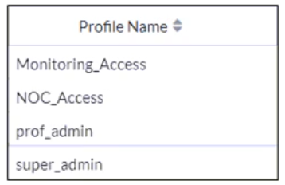
Exhibit: image31.png
AIncrease the offline value of the Override Idle Timeout parameter in the NOC_Access admin profile.✓ ANSWER
BEnsure that all NOC_Access users are assigned the super_admin role to guarantee access.
CMove NOC_Access to the top of the list to ensure all profile settings take effect.
DIncrease the admintimeout value under config system accprofile NOC_Access.
Answer:AMost-voted (discussion)
Community most-voted: A (10 of 11 votes).
✅ Verified vs Fortinet docs📖 Why this answer (doc evidence)
Admin profile Override Idle Timeout (offline value) controls GUI session inactivity timeout.
[Study Guide ✓] You can override the idle timeout setting for each administrator profile using the Override Idle Timeout setting. — Guide says Override Idle Timeout lets admintimeout under config system accprofile be overridden per access profile to increase inactivity timeout - exactly configuring it in the NOC_Access admin profile as A requires.
Community vote distribution (11 votes)
A
10
D
1
💬 Discussion comments (5)
👤 SachinNCINGA3 months, 1 week ago▲ 3
Why A is correct
In admin profiles, there is:
Override Idle Timeout
If enabled, it overrides global admin timeout
You can increase the idle time just for this profile
Exactly solves:
“don’t disconnect too early”
👤 lukas265 months ago▲ 3
config system accprofile
edit NOC_Access
set override-idle-timeout enable
set idle-timeout <minutes>
👤 ANDY13136 months, 1 week ago▲ 4
"The Override Idle Timeout option allows the admintimeout value, under config system accprofile, to be overridden for each access profile. You can configure administrator profiles to increase inactivity timeout and facilitate use of the GUI for central monitoring. Note that you can do this on a per-profile basis, to prevent the option from being unintentionally set globally."
👤 mupfl6 months, 3 weeks ago▲ 1
admintimeout: "Sets the amount of time that an administrator can be idle before being automatically logged out."
Applies per admin profile, not globally.
+1 more comments
System & Performance (Conserve Mode)3 questionsQuestion #19Topic 1
Refer to the exhibits. The exhibits show the system performance output and default configuration of high memory usage thresholds on a FortiGate device. Based on the system performance output, what are the two possible outcomes? (Choose two.)
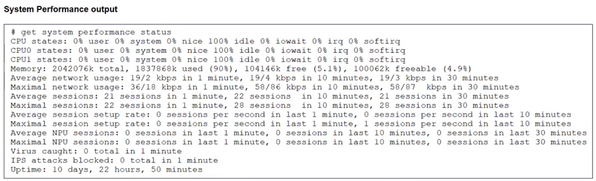
Exhibit: image14.png
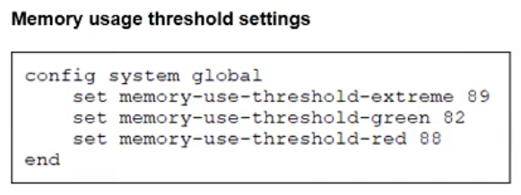
Exhibit: image15.png
AFortiGate drops new sessions.✓ ANSWER
BAdministrators can access FortiGate only through the console port.
CAdministrators can change the configuration.
DFortiGate has entered conserve mode.✓ ANSWER
Answer:ADMost-voted (discussion)
Community most-voted: AD (4 of 4 votes).
✅ Verified vs Fortinet docs📖 Why this answer (doc evidence)
Conserve mode: new sessions dropped, config changes refused (exhibit thresholds crossed).
[Study Guide ✓] While memory usage is above this highest threshold, all new sessions are dropped. — Same passage: above red threshold FortiGate enters memory conserve mode (D); above extreme threshold all new sessions dropped (A); below green threshold it exits - both recorded outcomes supported.
D. FortiGate enters conserve mode
When memory > red/extreme threshold
FortiGate goes into conserve mode
A. FortiGate drops new sessions
In conserve mode:
System tries to protect memory
So it drops new sessions
👤 Sam_sgv4 months, 4 weeks ago▲ 2
Threshold red: Fortigate enters Conserve Mode. In this mode, System configurations cannot be changed, skips quarantine actions, set fail-open setting kicks in.
Extreme: New sessions are dropped
Question #44Topic 1
Refer to the exhibit. Based on this configuration, what are the two possible outcomes when FortiGate enters conserve mode? (Choose two.)
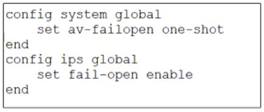
Exhibit: image42.png
AFortiGate drops new sessions requiring inspection.
BAdministrators must restart FortiGate to allow new sessions.
CFortiGate skips quarantine actions.✓ ANSWER
DAdministrators cannot change the configuration.✓ ANSWER
Answer:CDMost-voted (discussion)
Community most-voted: CD (9 of 12 votes).
✅ Verified vs Fortinet docs📖 Why this answer (doc evidence)
Conserve mode: skips quarantine actions; administrators cannot change configuration.
[Study Guide ✓] FortiGate does not accept configuration changes, because they might increase memory usage. • FortiGate does not run any quarantine action, including forwarding suspicious files to FortiSandbox. — Conserve-mode actions listed verbatim: no configuration changes accepted and no quarantine actions run — exactly choices C and D of the recorded answer.
A.[False] FortiGate drops new sessions requiring inspection.
--> set av-failopen one-shot - don't drops new sesion.
--> set fail-open enable - When enabled, the IPS engine does not perform any scans and allows new packets.
B.[False ]Administrators must restart FortiGate to allow new sessions.
--> Continue to bypass the antivirus proxy after the FortiGate is out of conserve mode, until the failopen setting is changed or the FortiGate is restarted.
C.[True] FortiGate skips quarantine actions.
D.[True] Administrators cannot change the configuration.
👤 3e53ba44 months, 4 weeks ago▲ 2
Fortigate no Dropea las nuevas sesiones con inspección en el modo failopen, sino que las deja pasar sin inspeccionarlas hasta que se reinicie el equipo (pág. 502 del manual)
👤 2cad5f46 months, 2 weeks ago▲ 1
A and D is correct
+1 more comments
Question #41Topic 1
Which two statements are correct when the FortiGate device enters conserve mode? (Choose two.)
AFortiGate refuses to accept configuration changes.✓ ANSWER
BFortiGate continues to run critical security actions, such as quarantine.
CFortiGate halts complete system operation and requires a reboot to regain available resources.
DFortiGate continues to transmit packets without IPS inspection when the fail -open global setting in IPS is enabled.✓ ANSWER
Answer:ADMost-voted (discussion)
Community most-voted: AD (14 of 17 votes).
✅ Verified vs Fortinet docs📖 Why this answer (doc evidence)
Conserve mode refuses config changes; IPS fail-open keeps transmitting without IPS inspection.
[Study Guide ✓] FortiGate does not accept configuration changes ... Enable the setting so that packets can still be transmitted while in conserve mode — Conserve-mode actions listed: no config changes accepted (A) and IPS fail-open transmits packets without IPS inspection (D). Guide explicitly says quarantine actions stop (refutes B) and only new sessions drop above extreme threshold, no full halt (refutes C).
The two correct statements are:
A. FortiGate refuses to accept configuration changes.
To prevent further memory consumption, the FortiGate enters a "read-only" state for the configuration. If you try to change settings in the GUI or CLI, you will receive an error message.
D. FortiGate continues to transmit packets without IPS inspection when the fail-open global setting in IPS is enabled.
In conserve mode, the IPS engine may not have enough memory to inspect all traffic. If fail-open is enabled under config ips global, the FortiGate will bypass the IPS engine and allow traffic to pass uninspected to maintain availability. If fail-open is disabled, the traffic is dropped.
👤 a3725bf3 months, 2 weeks ago▲ 2
B is incorrect because the Conserver mode suspends all securtiy actions so it can do network stuff
👤 fujmanfuj4 months, 3 weeks ago▲ 2
What actions does FortiGate take to preserve memory while in conserve mode?
. FortiGate does not accept configuration changes, because they might increase memory usage.
. FortiGate does not run any quarantine action, including forwarding suspicious files to FortiSandbox.
. You can configure the fail-open setting under config ips global to control how the IPS engine behaves when the IPS socket buffer is full.
👤 Sam_sgv4 months, 3 weeks ago▲ 2
enable fail-open mode:
The default setting is disable, so sessions are dropped by IPS engine when the system enters fail-open mode.
The FortiGate device HQ-NGFW-1 with the IP address 10.0.13.254 sends logs to the FortiAnalyzer device with the IP address 10.0.13.125. The administrator wants to verify that reliable logging is enabled on HQ-NGFW-1. Which exhibit helps with the verification?
A
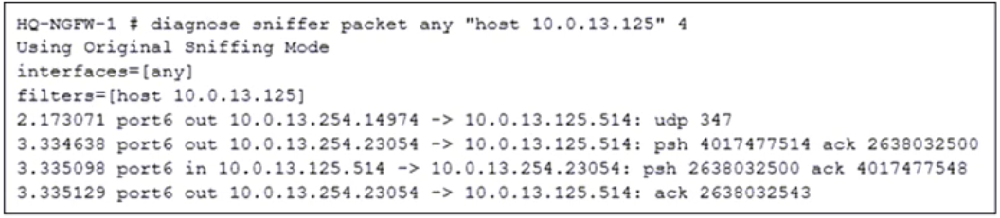
B
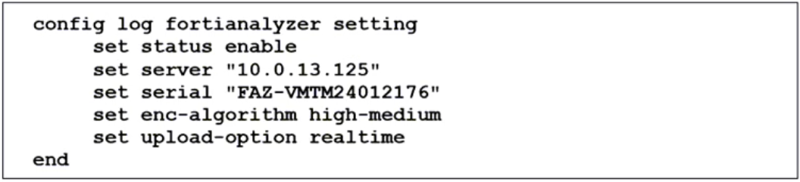
C
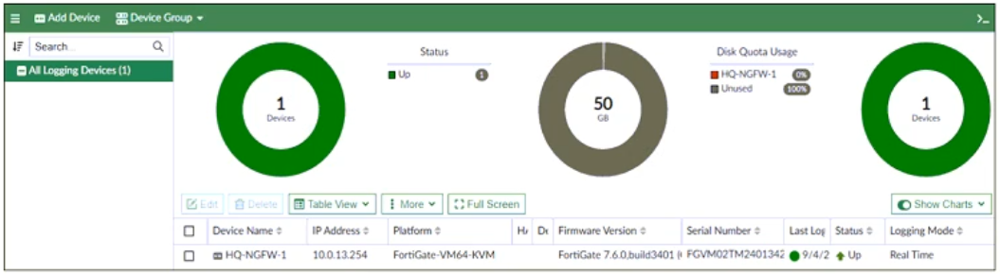
D
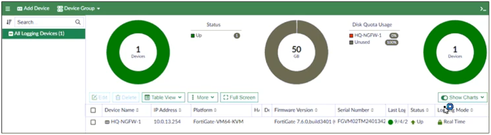
✓ ANSWER
Answer:DOfficial + most-voted
✅ Verified vs Fortinet docs📖 Why this answer (doc evidence)
Padlock icon shown in D means reliable logging is enabled. The CLI command for reliable logging is ‘set reliable enable’ which doesn't appear in B. This means that D is correct as it shows the padlock
👤 ahutch3 months, 2 weeks ago▲ 2
Padlock icon means reliable logging is enabled
👤 a3725bf3 months, 3 weeks ago▲ 3
• In the GUI:
• Navigate to Log & Report > Log Settings.
• Look at the Remote Logging and Archiving section.
• If you are sending logs to FortiAnalyzer/FortiManager, look for a Padlock Icon next to the configuration. In newer versions of FortiOS (like 7.4/7.6), this icon explicitly indicates that a secure, reliable connection (TCP/SSL) is being used
👤 a3725bf3 months, 3 weeks ago▲ 1
Option B is a red herring
It should have "set reliable enable" in the output.
+9 more comments
Question #13Topic 1
Refer to the exhibit. Which two ways can you view the log messages shown in the exhibit? (Choose two.)
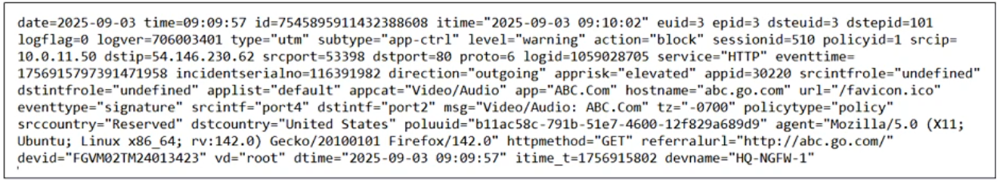
Exhibit: image10.png
ABy right clicking the implicit deny policy
BBy filtering the policy universally unique identifier (UUID) and application name in the log entry✓ ANSWER
CUsing the FortiGate CLI command diagnose log test
DIn the Forward Traffic section✓ ANSWER
Answer:BDMost-voted (discussion)
Community most-voted: BD (3 of 3 votes).
✅ Verified vs Fortinet docs📖 Why this answer (doc evidence)
Forward Traffic section + UUID/application filter; actual4test Suggested Answer BD.
[Study Guide ✓] You can also view the details on the Forward Tr… a UUID attribute is added so that logs can record these UUIDs — App-control log excerpt directs readers to the Forward Traffic page (source text truncated mid-word) and the guide adds policy UUIDs so logs record them alongside application details — matching B (UUID/application filter) and D (Forward Traffic).
type="utm" + subtype="app-ctrl" → Application Control log
action="block" → traffic blocked by policy
poluuid="..." → policy UUID present
This is a forward traffic (user traffic) security log, not implicit deny
Question #84Topic 1
Refer to the exhibit. How can the administrator view the log messages shown in the exhibit? (Choose two.)
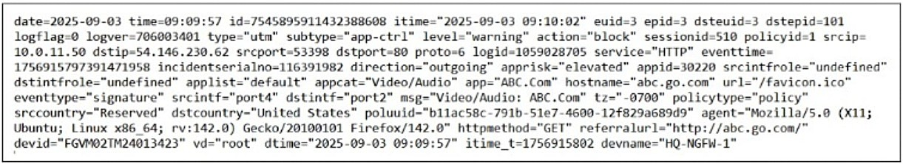
Exhibit: image74.png
AThrough Security event log page✓ ANSWER
BThrough FortiGate CLI command diagnose log test
CBy right clicking the Implicit deny policy
DFiltering by Policy UUID and Application Name in the log entry✓ ANSWER
Answer:ADGoogle AI Overview
View via Security event log page + filter by Policy UUID and Application Name. diagnose log test only generates test logs. (Google AI Overview matched our exact option set; FCP mirror's Suggested Answer BD maps the same two.)
✅ Verified vs Fortinet docs📖 Why this answer (doc evidence)
Security event log page + filter by Policy UUID/Application Name; actual4test Suggested Answer BD maps to AD.
[Study Guide ✓] FortiGate logs all application control events on the Log & Report > Security Events page. You can view the logs by clicking Application Control. — Application-control events are viewed on the Security Events page (choice A); a separate excerpt notes policy UUID attributes are added so logs record UUIDs, weakly supporting choice D.
FortiGate is integrated with FortiAnalyzer and FortiManager. When creating a firewall policy, which attribute must an administrator include to enhance functionality and enable log recording on FortiAnalyzer and FortiManager?
AUniversally Unique Identifier✓ ANSWER
BLog ID
CSequence ID
DPolicy ID
Answer:AMost-voted (discussion)
Community most-voted: A (6 of 6 votes).
✅ Verified vs Fortinet docs📖 Why this answer (doc evidence)
Firewall policy UUID enables FortiAnalyzer log correlation (source-and-destination UUID logging).
[Study Guide ✓] a UUID attribute is added so that logs can record these UUIDs and improve functionality when integrating with FortiManager or FortiAnalyzer — Passage states firewall objects/policies get a UUID attribute so logs record it, improving FortiAnalyzer/FortiManager functionality - exactly answer A.
Community vote distribution (6 votes)
A
6
💬 Discussion comments (3)
👤 prepengine3 months ago▲ 1
The answer is A, but the question itself is misleading. The FortiGate automatically generates and adds the UUID to every new firewall policy (and most other objects) when it is created.
The administrator does not manually type or "include" it — it's handled by FortiOS automatically.
👤 SachinNCINGA3 months, 1 week ago▲ 3
Each firewall policy can have a UUID
This UUID is used by FortiAnalyzer and FortiManager to:
uniquely track the policy
correlate logs even if policy ID/order changes
Logs include poluuid → this is what those systems rely on
Without UUID, tracking and reporting become inconsistent
👤 a3725bf3 months, 3 weeks ago▲ 2
the Universally Unique Identifier (UUID) is a critical metadata attribute automatically assigned to every firewall policy and object.
Question #70Topic 1
Refer to the exhibit. You are configuring FortiAnalyzer on FortiGate. Which step must you take to connect FortiAnalyzer to FortiGate?
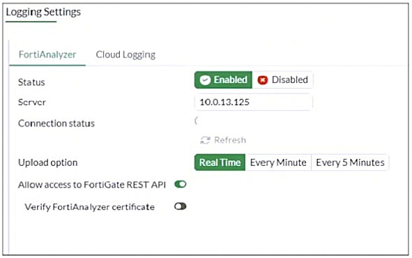
Exhibit: image63.png
AVerify the FortiAnalyzer serial number.
BEnable disk logging on FortiGate.
CAuthorize FortiGate on FortiAnalyzer.✓ ANSWER
DConfigure UDP port 514 on FortiGate.
Answer:CMost-voted (discussion)
Community most-voted: C (2 of 2 votes).
✅ Verified vs Fortinet docs📖 Why this answer (doc evidence)
FortiAnalyzer requires authorizing the FortiGate on FortiAnalyzer before logs are accepted.
[Study Guide ✓] The FortiAnalyzer administrator should review the details of the unauthorized device and, if satisfied, authorize the device. — Registration flow requires the FortiAnalyzer administrator to authorize the requesting (unauthorized) FortiGate before log collection proceeds — the step in answer C.
When you configure FortiAnalyzer on FortiGate:
FortiGate sends a registration request
FortiAnalyzer shows the device as unauthorized
You MUST approve/authorize it on FortiAnalyzer
👉 Without authorization → connection will not establish
High Availability (FGCP)7 questionsQuestion #20Topic 1
What are two characteristics of HA cluster heartbeat IP addresses in an FortiGate device? (Choose two.)
AHeartbeat IP addresses are used to distinguish between cluster members.✓ ANSWER
BThe heartbeat interface of the primary device in the cluster is always assigned IP address 169.254.0.1.
CHeartbeat interfaces have virtual IP addresses that are manually assigned.
DA change in the heartbeat IP address happens when a FortiGate device joins or leaves the cluster.✓ ANSWER
Answer:ADMost-voted (discussion)
Community most-voted: AD (7 of 8 votes).
✅ Verified vs Fortinet docs📖 Why this answer (doc evidence)
Doc: FGCP heartbeat uses link-local 169.254.0.x; heartbeat IPs change when members join/leave.
Heartbeat IP addresses are used to distinguish between cluster members → Each FortiGate in the HA cluster uses unique heartbeat IPs so members can identify one another.
A change in the heartbeat IP address happens when a FortiGate device joins or leaves the cluster → Heartbeat IPs are dynamically reassigned when the cluster membership changes to maintain proper communication.
👤 IETF14 months, 1 week ago▲ 1
A and C
C because Heartbeat IP assignment is dynamic and based on factors such as serial number order. When a new FortiGate joins the cluster or an existing member leaves/fails, the cluster renegotiates and may reassign the heartbeat IPs to maintain uniqueness among the current members.
Question #54Topic 1
Which two statements are true about an HA cluster? (Choose two.)
ALink failover triggers a failover if the administrator sets the interface down on the primary device.✓ ANSWER
BAn HA cluster cannot have both in-band and out-of-band management interfaces at the same time.
CWhen sniffing the heartbeat interface, the administrator must see the IP address 169.254.0.2.
DHA incremental synchronization includes FIB entries and IPsec SAs.✓ ANSWER
Answer:ADMost-voted (discussion)
Community most-voted: AD (10 of 15 votes).
✅ Verified vs Fortinet docs📖 Why this answer (doc evidence)
Link failover on monitored interface down; incremental sync includes FIB entries and IPsec SAs.
[Study Guide ✓] A link failover occurs when the link status of a monitored interface on the primary FortiGate goes down. — Supports A verbatim. Runtime-sync excerpt shows 'DHCP leases and FIB entries, are also synchronized', partially supporting D (IPsec SAs fall in a truncated portion).
Main issue: Option C
“must see the IP address 169.254.0.2”
This is the weak point in your argument.
Why it’s incorrect:
FGCP heartbeat does use 169.254.0.x (link-local) ✔
But:
The exact IPs (.1, .2, etc.) are not guaranteed
They can vary depending on:
Cluster member ID
Election/re-election
Firmware behavior
The keyword “must” makes the statement false in exam logic.
Fortinet exams are very strict:
If something is not deterministic → it’s incorrect
👤 a3725bf3 months, 2 weeks ago▲ 4
According to the FortiOS 7.6 Administrator Study Guide:
1. Statement A (TRUE): Manually setting a monitored interface to down on the primary unit simulates a link failure and triggers a failover (confirmed on page 512).
2. Statement D (TRUE): Incremental synchronization is the mechanism that keeps dynamic data like FIB entries and IPsec SAs in sync (confirmed on page 501
Why I think C is wrong
The Hello is the HeartBeat so you are looking for )x8890 and not the IP address
This is a tuff Question and Hope to hell they give half credit. I spent way to much time Proving to Myself C was not correct.
👤 nanliz4 months ago▲ 2
D: Incremental synchronization also synchronizes other dynamic configuration information, such as the DHCP server address lease database, routing table updates, IPsec SAs, MAC address tables, and so on.
See an introduction to the FGCP for more information
👤 Chuck_IT4 months, 2 weeks ago▲ 2
Correct Statements: A and C
A. Link failover triggers a failover if the administrator sets the interface down on the primary device.
Explanation: When an interface is configured as a "monitor-interface" in the HA settings, the FortiGate tracks its status. If that interface goes down—whether due to a physical cable failure or an administrator manually setting the interface to down via the CLI or GUI—the HA priority is reduced, and a failover to the secondary unit is triggered.
C. When sniffing the heartbeat interface, the administrator must see the IP address 169.254.0.2.
Explanation: FortiGate units in an HA cluster communicate with each other over the heartbeat link using a private, non-routable APIPA subnet: 169.254.0.x. Typically, the primary unit uses 169.254.0.1 and the secondary unit uses 169.254.0.2.
+2 more comments
Question #22Topic 1
Refer to the exhibits. An administrator has observed the performance status outputs on an HA cluster for 55 seconds. Which FortiGate is the primary?
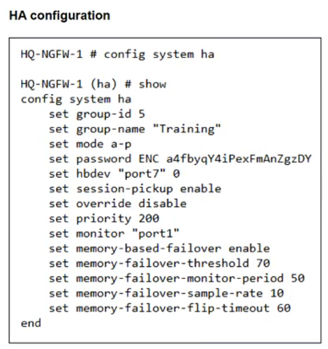
Exhibit: image18.png
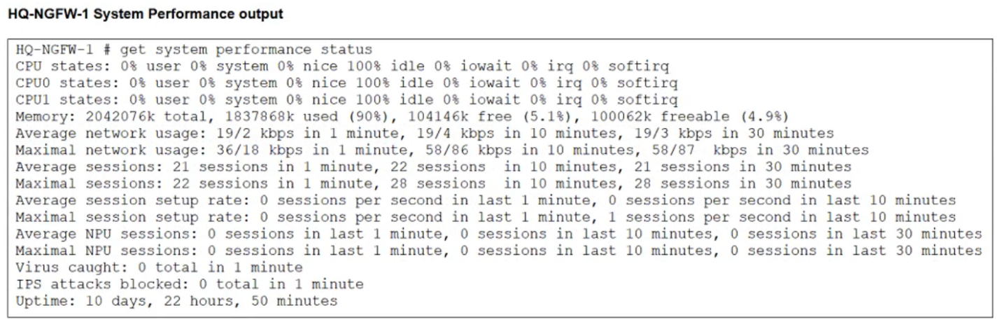
Exhibit: image19.png
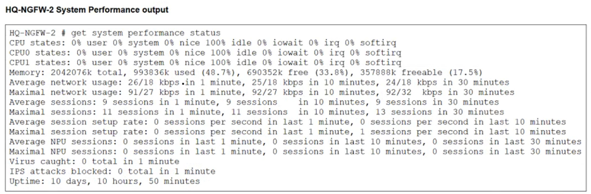
Exhibit: image20.png
AHQ-NGFW-2 with the parameter memory-failover-threshold setting✓ ANSWER
BHQ-NGFW-1 with the parameter override setting
CHQ-NGFW-2 with the parameter priority setting
DHQ-NGFW-1 with the parameter memory-failover-flip-timeout setting
Answer:AMost-voted (discussion)
Community most-voted: A (10 of 15 votes).
✅ Verified vs Fortinet docs📖 Why this answer (doc evidence)
memory-failover-threshold on HQ-NGFW-2 triggers failover at 55s (exhibit).
Community vote distribution (15 votes)
A
10
D
3
B
2
💬 Discussion comments (12)
👤 prepengine3 months ago▲ 1
A, D is incorrect. The flip-timeout protects against subsequent memory-based failovers, not the initial one.
👤 SachinNCINGA3 months, 1 week ago▲ 1
The HA configuration shows that override is disabled (set override disable), but despite this, HQ-NGFW-1 has the higher priority (200) and is acting as the primary, as indicated by its higher resource usage and uptime.
Override allows the device with higher priority to take over as primary, so HQ-NGFW-1 is the primary device.
👤 NasimDonya3 months ago▲ 1
A is correct, memory failover threshold is set
👤 b0d20864 months, 2 weeks ago▲ 3
A. HQ-NGFW-2 with the parameter memory-failover-threshold setting
Even though memory-failover-flip-timeout is set to 60 seconds, it does not delay the initial memory-based failover.
Because memory utilization remains above the 70% threshold for longer than the memory-failover-monitor-period of 50 seconds, a memory-based failover does occur.
+8 more comments
Question #29Topic 1
Refer to the exhibits. Based on the current HA status, an administrator updates the override and priority parameters on HQ-NGFW-1 and HQ-NGFW-2 as shown in the exhibits. What should be the expected outcome in the HA cluster?
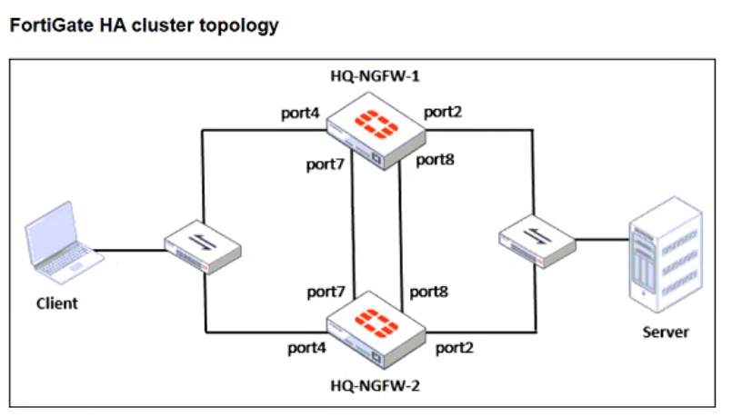
Exhibit: image28.png
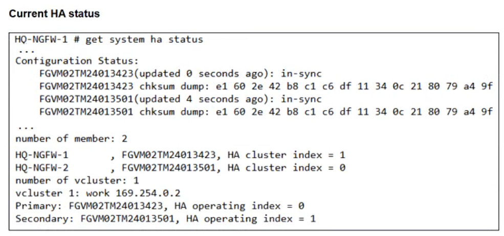
Exhibit: image29.png
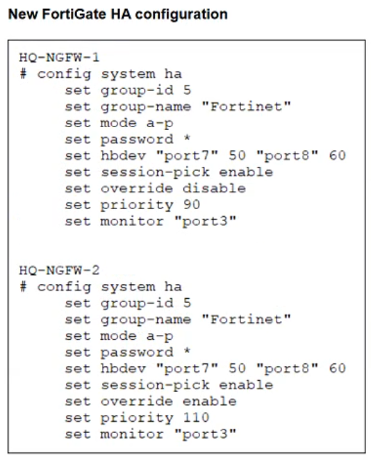
Exhibit: image30.png
AThe HA cluster will become out od sync because the override setting must match on all HA members.
BHQ-NGFW-1 will synchronize the override disable setting with HQ-NGFW-2.
CHQ-NGFW-1 will remain the primary because HQ-NGFW-2 has lower priority.
DHQ-NGFW-2 will take over as the primary because it has the override enable setting and higher priority than HQ-NGFW-1.✓ ANSWER
Answer:DMost-voted (discussion)
Community most-voted: D (1 of 1 votes).
✅ Verified vs Fortinet docs📖 Why this answer (doc evidence)
Override enabled + higher priority => HQ-NGFW-2 becomes primary.
[Study Guide ✓] If the HA override setting is enabled, the priority is considered before the HA uptime. — Guide states override-enabled members are elected by priority before uptime, that raising a secondary's priority triggers failover, and that override/priority are not synchronized between members - matching D's mechanism.
Community vote distribution (1 votes)
D
1
💬 Discussion comments (1)
👤 SachinNCINGA3 months, 1 week ago▲ 1
With override enabled on HQ-NGFW-2 and its higher priority (110 vs. 90), HQ-NGFW-2 will
become the primary device, preempting HQ-NGFW-1 despite the current primary status.
Question #36Topic 1
An administrator wants to form an HA cluster using the FGCP protocol. Which two requirements must the administrator ensure both members fulfill? (Choose two.)
AThey must have the same HA group ID.✓ ANSWER
BThey must have the heartbeat interfaces in the same subnet.
CThey must have the same hard drive configuration.✓ ANSWER
DThey must have the same number of configured VDOMs.
Answer:ACFortinet docs verified
FGCP doc: 'All FortiGates in the cluster must be the same model and have the same firmware... same hardware configuration (such as the same number of hard disks)'. Same HA group ID is required to form a cluster; VDOM count is not a stated prerequisite.
✅ Verified vs Fortinet docs📖 Why this answer (doc evidence)
Doc: 'All FortiGates in the cluster must be the same model and have the same firmware... same hardware configuration (such as the same number of hard disks)' + same HA group ID.
[Study Guide ✓] the HA settings on each member have the same group ID ... Hard drive configuration: the same number and size of drives and partitions — Cluster requirements list identical hard drive configuration (C) and HA settings including the same group ID on each member (A). Heartbeat interfaces need same settings/broadcast domain (not 'same subnet', B); VDOM count is not listed.
Community vote distribution (18 votes)
AC
10
AD
7
CD
1
💬 Discussion comments (10)
👤 2c39a971 month, 4 weeks ago▲ 3
A To form an FGCP HA cluster, both FortiGates must share the same HA group ID to communicate and form a cluster.
C Both units must also have an identical hard drive configuration and hardware model to ensure resource compatibility.
B Heartbeat interfaces do not require subnets because they use a proprietary, non-IP layer 2 multicast protocol.
D VDOM configurations do not need to match beforehand, as the primary unit automatically overwrites the secondary unit's settings.
👤 SachinNCINGA3 months, 1 week ago▲ 1
✅ A. Same HA group ID
Mandatory for FGCP cluster formation
Devices with different group IDs will NOT join the same cluster
✅ D. Same number of VDOMs
In HA, config must match closely
Both FortiGates must have:
Same VDOM mode (multi/single)
Same number of VDOMs
👉 Otherwise HA sync fails
👤 HansM3 months, 1 week ago▲ 2
Check the Study Guide
For the VDOM, it should me management only.
so it means that ID and Hard Drive Config
👤 a3725bf3 months, 2 weeks ago▲ 1
Hardware and firmware are checked First, so if the yes you need the same HA Group ID you will not get that far. If you have a different hard drive config you are not running the same hardware, so that means you are technically running different Firmware.
It technically a good trick question.
+6 more comments
Question #60Topic 1
What is the primary FortiGate election process when the HA override setting is enabled?
AConnected monitored ports > HA uptime > Priority > FortiGate serial number
BConnected monitored ports > Priority > System uptime > FortiGate serial number
CConnected monitored ports > Priority > HA uptime > FortiGate serial number✓ ANSWER
DConnected monitored ports > System uptime > Priority > FortiGate serial number
Answer:CFortinet docs verified
HA doc: with override enabled, priority is prioritized over uptime — order is Monitor > Priority > Uptime > Serial ('MPUS'). Uptime criterion is HA uptime (reset on monitored-interface failure/restart), not system uptime.
✅ Verified vs Fortinet docs📖 Why this answer (doc evidence)
Override enabled: Monitor > Priority > HA uptime > Serial (MPUS); HA uptime not system uptime.
[Study Guide ✓] If the HA override setting is enabled, the priority is considered before the HA uptime. — Disabled order is monitored ports > HA uptime > priority > serial; the guide says with override enabled priority precedes HA uptime, giving connected monitored ports > Priority > HA uptime > serial — exactly C.
Community vote distribution (5 votes)
C
4
A
1
💬 Discussion comments (4)
👤 JCPR092 weeks, 3 days ago▲ 1
Since the question said that override is enable then: Connected Monitored ports > Priority > HA Uptime > Serial Number
👤 Clark_A1 month ago▲ 1
Order of HA election is:
Connected Monitored Port > HA Uptime > Priority > Serial Number
If override is enabled, then:
Connected Monitored ports > Priority > HA Uptime > Serial Number
👤 jlcl2 months, 3 weeks ago▲ 1
Serial number: If all else is equal, the unit with the higher serial number wins.
👤 SachinNCINGA3 months, 1 week ago▲ 2
By default, FortiGate prioritizes Uptime over Priority. This is designed to prevent "flapping"—where a rebooted unit with a higher priority keeps reclaiming the primary role, causing brief network interruptions. The default order is:
Connected monitored ports: The unit with the most functional monitored interfaces wins.
HA uptime: The unit that has been up the longest (by at least 5 minutes/300 seconds) wins.
Priority: If uptimes are similar, the unit with the higher configured priority wins.
Serial number: If all else is equal, the unit with the higher serial number wins.
Question #80Topic 1
Refer to the exhibits. An administrator configured both members of an HA cluster at the same time. After one week of monitoring, the administrator wants to verify the HA failover performance. How can the administrator force a failover?
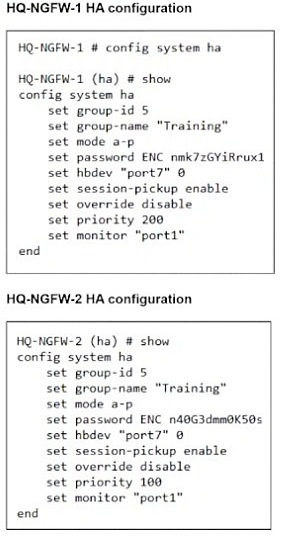
Exhibit: image71.png
AThe administrator must reset the HA uptime on HQ-NGFW-1.✓ ANSWER
BThe administrator must set the parameter override to enable on HQ-NGFW-2.
CThe administrator must set the monitored port1 to down on HQ-NGFW-1.
DThe administrator must increase the HA priority on HQ-NGFW-2.
Answer:AMost-voted (discussion)
Community most-voted: A (7 of 10 votes).
✅ Verified vs Fortinet docs📖 Why this answer (doc evidence)
To verify failover performance, reset HA uptime on the current primary (both were configured at same time).
[Study Guide ✓] you can do so by reducing the HA uptime of the primary FortiGate. You can do this by running the diagnose sys ha reset-uptime command on the primary FortiGate — HA election passage: with override disabled, manually fail over by resetting the primary's HA uptime via diagnose sys ha reset-uptime - matches forcing failover by resetting uptime on HQ-NGFW-1.
Community vote distribution (10 votes)
A
7
C
3
💬 Discussion comments (5)
👤 mahmud841 month, 3 weeks ago▲ 2
Why Option A is correct: The official and cleanest way to manually trigger a controlled failover when override is disabled is to reduce the primary unit's HA uptime down to zero. By executing the command diagnose sys ha reset-uptime on the current primary firewall (HQ-NGFW-1), its HA uptime resets to 0. HQ-NGFW-2 (with its 1 week of continuous uptime) immediately wins the uptime election criterion and gracefully takes over the primary role.
👤 NasimDonya3 months ago▲ 2
easiest way to test failover when override is disabled is to do ha reset uptime on primary unit
👤 ahutch3 months, 3 weeks ago▲ 1
C is the recommended way to test failover
👤 nanliz4 months ago▲ 3
the key is "force failover" so you need modify HA uptime (guide page 452)
+1 more comments
FortiSASE & Cloud6 questionsQuestion #14Topic 1
Refer to the exhibit. A partial cloud topology is shown. You deployed a FortiGate Cloud-Native Firewall (CNF) in AWS. During the deployment, which components must be FortiGate CNF create to handle traffic from the EC2 instance?
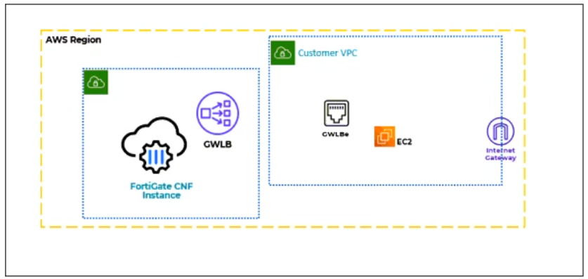
Exhibit: image11.png
AThe GWLB, GWLBe, and the internet gateway (IGW) in the customer VPC
BThe CNF VPC, customer VPC, and GWLB
CThe customer VPC and GWLBe
DThe gateway load balancer endpoint (GWLBe) in the customer virtual private cloud (VPC)✓ ANSWER
Answer:DMost-voted (discussion)
Community most-voted: D (2 of 2 votes).
✅ Verified vs Fortinet docs📖 Why this answer (doc evidence)
FortiGate CNF creates the GWLBe in the customer VPC to steer traffic.
Simple explanation
In AWS CNF setup:
FortiGate CNF sits behind a GWLB (in Fortinet side)
Your EC2 is in customer VPC
To send traffic from EC2 → FortiGate:
You MUST create GWLBe in the customer VPC
This endpoint acts like a bridge/tunnel between your VPC and the GWLB (where FortiGate is)
Question #72Topic 1
Refer to the exhibit. A partial cloud topology is shown. You deployed a FortiGate Cloud-Native Firewall (CNF) in AWS for FortiGate CNF policy enforcement for EC2 instance traffic. Which path does the EC2 traffic take from the EC2 instance to the internet?
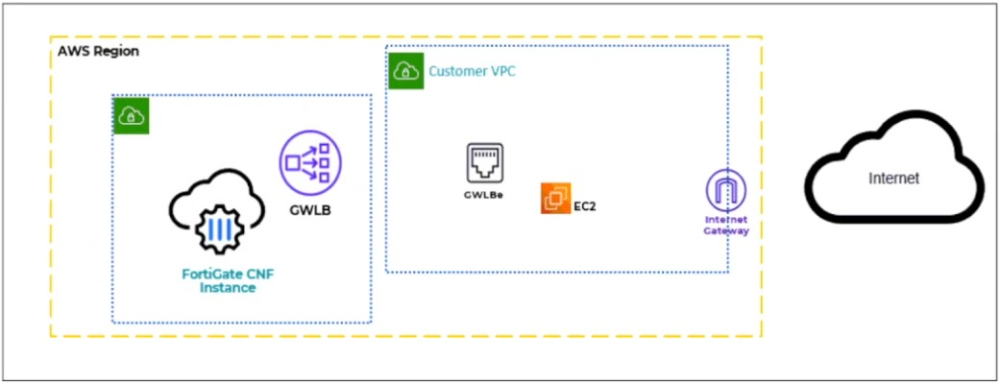
Exhibit: image64.png
AEC2 instance -> internet gateway (IGW) -> gateway load balancer (GWLB) -> FortiGate CNF -> internet
FortiGate CNF on AWS: outbound traffic hairpins EC2 → GWLBe → FortiGate CNF → GWLBe → IGW → internet (GENEVE-encapsulated, two passes through the GWLBe).
✅ Verified vs Fortinet docs📖 Why this answer (doc evidence)
traffic in protected vpc is routed to relevant GWLBe.Then traffic is forwarded to FGT CNF to enforce security policy and if traffic is not blocked, it is sent back to GWLBe it was received from and then traffic is passes out through IGW
👤 NasimDonya3 months ago▲ 1
traffic in protected vpc is routed to relevant GWLBe.Then traffic is forwarded to FGT CNF to enforce security policy and if traffic is not blocked, it is sent back to GWLBe it was received from and then traffic is passes out through IGW
👤 YuriKurka3 months ago▲ 4
The following steps outline how FortiGate CNF works with AWS:
FortiGate CNF creates a network interface (a GWLB endpoint or a GWLBe in your VPC) in your protected networks.
Traffic in your protected VPCs is routed to the relevant GWLBe.
Traffic is forwarded to the CNF service to enforce security policies.
If traffic is not blocked, it is sent back to the GWLBe it was received from.
Traffic passes out through the internet gateway."
— FortiOS 7.6 Administrator Study Guide, Page 527
Option C is incorrect
EC2 instance → GWLB endpoint (GWLBe) → FortiGate CNF → IGW → internet
INCORRECT - The return to GWLBe after inspection is missing. Traffic must return to GWLBe before passing through IGW.
👤 andrpercud3 months, 1 week ago▲ 2
B. EC2 instance -> GWLBe -> FortiGate CNF -> GWLBe -> IGW -> internet
In a Gateway Load Balancer (GWLB) architecture, the traffic flow must be symmetric to maintain transparent inspection. Here is the logical breakdown of the path:
The EC2 instance sends traffic to the internet. The subnet's route table intercepts this and points it to the GWLBe. The GWLBe encapsulates the packet and sends it to the FortiGate CNF (located in the service VPC) for inspection. After the FortiGate CNF inspects and allows the traffic, it must return the packet to the same GWLBe it came from. It does not hand it off directly to the Internet Gateway. The GWLBe receives the clean packet, decapsulates it, and finally forwards it to the Internet Gateway (IGW) to reach the destination.
+1 more comments
Question #24Topic 1
Which two components are part of the secure internet access (SIA) agent-based mode on FortiSASE? (Choose two.)
AFortiExtender
BVPN policies✓ ANSWER
CThe proxy auto-configuration (PAC) file
DFortiSASE Firewall-as-a-Service (FWaaS)✓ ANSWER
Answer:BDMost-voted (discussion)
Community most-voted: BD (11 of 13 votes).
✅ Verified vs Fortinet docs📖 Why this answer (doc evidence)
SIA agent-based uses FortiClient tunnel with VPN policies; FWaaS is a SASE component per concept guide: 'FWaaS is a firewall solution delivered as a cloud-based service... provides next-generation firewall (NGFW) capabilities'.
[Study Guide ✓] The VPN policy on FortiSASE is configured with the required security components, such as web filtering, application control — Agent-based mode uses a secure VPN tunnel with a VPN policy (B). Another passage: 'comprehensive FWaaS and SWG capabilities secure managed and unmanaged devices by supporting agent and agentless approaches' (D). PAC file is agentless-only, consistent with BD.
A is irrelevant here and C is for agentless proxy configs
👤 SachinNCINGA3 months, 1 week ago▲ 2
In FortiSASE Secure Internet Access (SIA) agent-based mode, traffic steering and security enforcement rely on components integrated with the FortiClient agent.
Components used in SIA agent-based mode
D . FortiSASE Firewall-as-a-Service (FWaaS)
Correct.
FWaaS is a core security component of FortiSASE.
It enforces firewall policies, security inspection, and access control for agent-based users.
All user traffic tunneled by the agent is inspected by FWaaS.
B . VPN policies
Correct.
In agent-based mode, the FortiClient establishes a secure tunnel to FortiSASE.
VPN policies define:
Authentication
Access control
Traffic steering
These policies are fundamental to agent-based connectivity.
👤 a3725bf3 months, 3 weeks ago▲ 2
B and D Pac file is for Secure Web Gateway /SWG
👤 andrpercud3 months, 3 weeks ago▲ 3
For agent-based mode in FortiSASE, the key concept is that traffic is steered and secured by the endpoint agent, not by PAC files or external devices.
What agent-based mode includes
Uses an endpoint agent (FortiClient)
Traffic is tunneled securely to the cloud
Security inspection is enforced in the cloud (FWaaS)
Correct answers
B. VPN policies
Agent-based mode relies on secure tunnels (VPN-like behavior)
VPN policies define how traffic is routed to FortiSASE
D. FortiSASE Firewall-as-a-Service (FWaaS)
Core component of SIA
Provides:
Application control
Web filtering
IPS
All enforced in the cloud
+4 more comments
Question #71Topic 1
You are onboarding an agentless, secure web gateway (SWG) endpoint for secure internet access (SIA). What will happen to the user’s nonweb traffic?
AAll the nonweb traffic will bypass FortiSASE.✓ ANSWER
BFortiSASE will use SWG to redirect nonweb traffic to FortiExtender.
CFortiSASE will use Firewall-as-a-Service (FWaaS) to redirect nonweb traffic.
DThe endpoint will use split tunneling to redirect nonweb traffic to FortiSASE.
Answer:AMost-voted (discussion)
Community most-voted: A (3 of 3 votes).
✅ Verified vs Fortinet docs📖 Why this answer (doc evidence)
Doc: 'SWG is a web gateway or proxy solution that forwards or proxies a user's web-based traffic' — agentless SWG endpoints only steer web traffic; non-web traffic bypasses FortiSASE.
[Study Guide ✓] SWG deployment secures only web traffic protocols, such as HTTP and HTTPS. ... All other nonweb traffic bypasses FortiSASE and is forwarded directly to the internet. — Agentless SWG deployment secures only HTTP/HTTPS; passage states all other nonweb traffic bypasses FortiSASE and is forwarded directly to the internet - matches choice A.
SIA for agentless remote users involves setting up a web browser, or a browser-based device using a proxy autoconfiguration (PAC) file to use the FortiSASE proxy service as an explicit web proxy. The web browser redirects HTTP and HTTPS traffic to the proxy, which secures user web traffic by implementing proxy security policies. All other non-web traffic bypasses FortiSASE and is forwarded to the internet directly.
Question #34Topic 1
How does FortiExtender connect to FortiSASE in a site-based, remote internet access method?
AFortiExtender establishes a secure SSL connection using FortiClient.
BFortiExtender uses the proxy auto-configuration (PAC) file and an explicit web proxy to connect.
CFortiExtender first connects to a FortiGate LAN extension through a secure web gateway (SWG).
DFortiExtender uses a Virtual Extensible LAN (VXLAN)-over-IPsec connection.✓ ANSWER
Answer:DMost-voted (discussion)
Community most-voted: D (1 of 1 votes).
✅ Verified vs Fortinet docs📖 Why this answer (doc evidence)
Confirmed by MiMo-V2.5 (vision) review 2026-08-09: FortiExtender site-based remote internet access = VXLAN-over-IPsec to FortiSASE (D). A/B/C describe agent-based or proxy methods.
[Study Guide ✓] forms an IPsec tunnel back to FortiSASE. A virtual eXtensible LAN (VXLAN) is established over the IPsec tunnels — LAN-extension section: remote FortiExtender discovers the FortiSASE access controller, forms an IPsec tunnel, and VXLAN is established over the IPsec tunnels - exactly the VXLAN-over-IPsec connection in D.
Community vote distribution (1 votes)
D
1
💬 Discussion comments (1)
👤 SachinNCINGA3 months, 1 week ago▲ 1
Why D is correct
In site-based (remote internet access) with FortiSASE:
The branch/site device (FortiExtender) connects to the SASE cloud using:
IPsec tunnel (secure transport)
VXLAN overlay (to extend Layer 2 / network segmentation)
This allows the site to behave like it’s directly connected to the SASE fabric
Question #69Topic 1
An administrator wants to address shadow IT visibility challenges and prevent users from sending sensitive files outside the organization without proper approval. Which FortiSASE method should the administrator implement to achieve these goals?
ASecure internet access (SIA)
BSecure private access (SPA)
CSecure SaaS access (SSA)✓ ANSWER
DSecure SD-WAN access (SSD-WAN)
Answer:CMost-voted (discussion)
Community most-voted: C (2 of 2 votes).
✅ Verified vs Fortinet docs📖 Why this answer (doc evidence)
SSA (Secure SaaS Access) is the FortiSASE method for SaaS applications: steering table shows SaaS apps handled via CASB within SSA — the method for shadow IT + sensitive data egress control.
[Study Guide ✓] SSA addresses shadow IT visibility challenges and safeguards data loss prevention — Verbatim match: the FortiSASE use-case list assigns shadow-IT visibility and data-loss prevention to SSA, i.e., Secure SaaS access — answer C.
Community vote distribution (2 votes)
C
2
💬 Discussion comments (1)
👤 SachinNCINGA3 months, 1 week ago▲ 2
SSA is FortiSASE's solution specifically designed for controlling and securing SaaS application usage. It addresses both requirements directly:
Shadow IT visibility:
SSA discovers all SaaS applications being used across the organization
Classifies them as sanctioned, unsanctioned, or unknown
Gives administrators full visibility into which apps employees are using — even unauthorized ones
Preventing sensitive file exfiltration:
SSA integrates CASB (Cloud Access Security Broker) functionality
Applies DLP (Data Loss Prevention) policies to SaaS traffic
Can block file uploads, restrict sharing permissions, and enforce approval workflows before sensitive data leaves the organization through SaaS platforms
A network administrator is reviewing firewall policies in both Interface Pair View and By Sequence View. The policies appear in a different order in each view. Why is the policy order different in these two views?
AInterface Pair View sorts policies based on matching interfaces, while By Sequence View shows the actual processing order of rules.✓ ANSWER
BBy Sequence View groups policies based on rule priority, while Interface Pair View always follows the order of traffic logs.
CThe firewall dynamically reorders policies in Interface Pair View based on recent traffic patterns, but By Sequence View remains static.
DPolicies in Interface Pair View are prioritized by security levels, while By Sequence View strictly follows the administrator’s manual ordering.
Answer:AOfficial + most-voted
✅ Verified vs Fortinet docs📖 Why this answer (doc evidence)
Doc: 'Interface Pair View displays the policies in the order that they are checked for matching traffic, grouped by the pairs of incoming and outgoing interfaces'.
[Study Guide ✓] In the section of the applicable interface pair, FortiGate looks for a matching policy, beginning at the top. — Guide matches policies within applicable interface-pair sections from the top and stresses both views show one ordered list evaluated from the top — interface-pair grouping versus sequence order, consistent with A.
Community vote distribution (3 votes)
A
3
💬 Discussion comments (3)
👤 rafteles1 month ago▲ 1
FortiGate allows you to view firewall policies in two main ways:
1. Interface Pair View
In this view, policies are grouped by interface pair (Incoming Interface → Outgoing Interface).
2. By Sequence View
In this view, all policies appear in a single list, exactly in the order in which FortiGate evaluates them.
👤 mahmud842 months, 1 week ago▲ 1
The Core Concept: Top-Down Evaluation
FortiGate evaluates firewall policies top-down. When a packet enters the firewall, FortiOS checks it against the very first policy on the list. If it matches, the firewall applies the action (Accept or Deny) and stops looking. If it doesn't match, it moves to the second policy, and so on, until it hits the implicit deny rule at the bottom.
👤 SachinNCINGA3 months, 1 week ago▲ 1
Interface Pair View
Groups policies by incoming → outgoing interface pairs
Not actual execution order
By Sequence View
Shows top-to-bottom order
This is the real processing order FortiGate uses
Question #37Topic 1
When configuring firewall policies which of the following is true regarding the policy ID? (Choose two.)
AA policy ID cannot be modified once a policy is created.✓ ANSWER
BA firewall policy ID identifies the order of policy execution in firewall policies.
CIt is mandatory to provide a policy ID while creating a firewall policy regardless of GUI or CLI.
DYou can create a policy in CLI with policy ID 0.✓ ANSWER
Answer:ADMost-voted (discussion)
Community most-voted: AD (17 of 21 votes).
✅ Verified vs Fortinet docs📖 Why this answer (doc evidence)
Policy ID immutable after creation; CLI 'config firewall policy edit <id>' with 0 auto-assigns.
[Study Guide ✓] The policy ID never changes ... Assigning policy ID 0 automatically assigns the next available policy ID number — Policy ID is immutable once created (A); assigning ID 0 auto-picks the next free ID, noted as useful when creating CLI policies that require an ID (D). Execution order follows list position, not ID, so B is wrong.
Community vote distribution (21 votes)
AD
17
AB
4
💬 Discussion comments (10)
👤 FABIANDH936 months ago▲ 8
I was confused because policy 0 is a default. but I made a test, and yes, if you use CLI to create a policy with ID 0, automatically assigns the next avaiblable ID number. A y D
👤 a3725bf3 months, 2 weeks ago▲ 2
B is not True becase Policy is top down not based policy number
👤 IETF14 months, 1 week ago▲ 3
A is true: Once a firewall policy is created, its numeric policy ID is fixed and cannot be changed. The policy ID is a permanent identifier used internally for logging (policyid), referencing in scripts, FortiManager, FortiAnalyzer (along with UUID), and other operations. To "change" the ID, you must delete the policy and recreate it with a new ID.
D is true: In the CLI, you can use config firewall policy followed by edit 0. Entering edit 0 tells FortiGate to automatically assign the next available unused policy ID (it does not create a policy with ID 0). This is the standard way to create a new policy via CLI when you do not want to manually specify a specific number.
👤 f2ed5341 month, 3 weeks ago▲ 1
So it is yet anther trick question... You can use the 0 during policy creation but you dont actually create a policy with ID 0 because it automatically changes it. Feels like all the questions are focused on tricking the people
+6 more comments
Question #51Topic 1
Refer to the exhibit. FortiGate has two separate firewall policies for Sales and Engineering to access the same web server with the same security profiles. Which action must the administrator perform to consolidate the two policies into one?
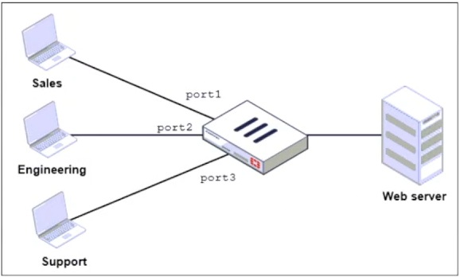
Exhibit: image45.png
ASelect port1 and port2 subnets in a single firewall policy.
BCreate an Aggregate interface that includes port1 and port2 to create a single firewall policy.
CReplace port1 and port2 with the any interface in a single firewall policy.
DEnable Multiple Interface Policies to select port1 and port2 in the same firewall policy.✓ ANSWER
Answer:DMost-voted (discussion)
Community most-voted: D (5 of 5 votes).
✅ Verified vs Fortinet docs📖 Why this answer (doc evidence)
Multiple Interface Policies (GUI) lets one policy select port1+port2.
Community vote distribution (5 votes)
D
5
💬 Discussion comments (5)
👤 amnewt4 months, 3 weeks ago▲ 1
Adding the subnets into a single policy wont matter if the policy is only looking for traffic coming from port 1.
Answer is D
👤 AZ02134 months, 3 weeks ago▲ 1
we have to enable multiple interface policy
👤 bab55fe4 months, 3 weeks ago▲ 1
No basta con seleccionar la red, debe seleccionar la interface
👤 Sam_sgv4 months, 3 weeks ago▲ 1
Selection multiple interfaces or Any interface is Disable by default; you need to enable "Multiple Interface Policies" under System>Feature Visibility
+1 more comments
Question #64Topic 1
Refer to the exhibit. Why did the FortiGate device drop the packet?
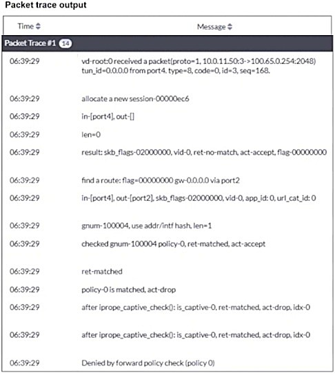
Exhibit: image56.png
AIt matched the default implicit firewall policy.✓ ANSWER
BIt failed the RPF check.
CIt matched an explicitly configured firewall policy with the action DENY.
DIt cannot reach the next-hop IP.
Answer:AMost-voted (discussion)
Community most-voted: A (4 of 4 votes).
✅ Verified vs Fortinet docs📖 Why this answer (doc evidence)
No matching explicit policy => implicit deny policy drops the packet (exhibit log).
[Study Guide ✓] If no match is found, the traffic is dropped by the default implicit deny firewall policy. — Documents the exact drop mechanism behind answer A: packets not matching any configured policy are dropped by the default implicit deny. Exhibit specifics can't be confirmed from text, but this bears directly on A.
Community vote distribution (4 votes)
A
4
💬 Discussion comments (1)
👤 2f2c73b5 months, 2 weeks ago▲ 4
It matched default firewall policy ID 0, which is the implicit deny policy
Question #73Topic 1
Refer to the exhibits. The exhibits show a diagram of a FortiGate device connected to the network, and the firewall configuration. An administrator created a Deny policy with default settings to deny Webserver access for Remote-User2. The policy should work such that Remote-User1 must be able to access the Webserver while preventing Remote-User2 from accessing the Webserver. Which additional configuration can the administrator add to a deny firewall policy, beyond the default behavior, to block Remote-User2 from accessing the Webserver?
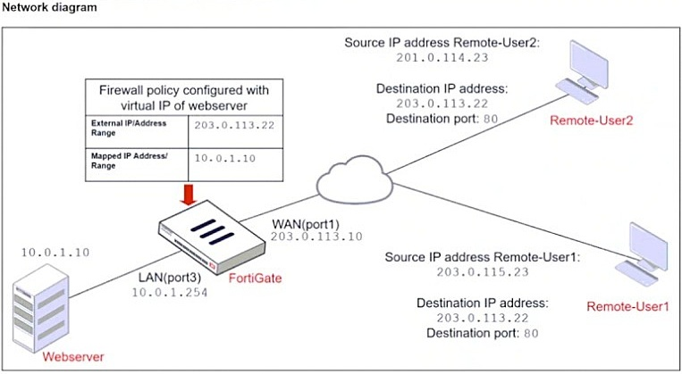
Exhibit: image65.png
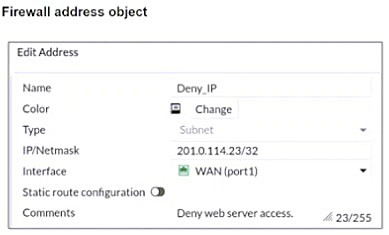
Exhibit: image66.png
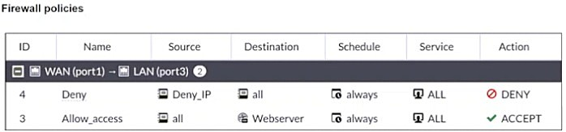
Exhibit: image67.png
ASet the Destination address as Webserver in the Deny policy.✓ ANSWER
BDisable match-vip in the Allow_access policy.
CSet the Destination address as Deny_IP in the Allow_access policy.
DConfigure a One-to-One IP Pool object in a new policy.
Answer:AMost-voted (discussion)
Community most-voted: A (1 of 1 votes).
✅ Verified vs Fortinet docs📖 Why this answer (doc evidence)
Deny policy default match-vip: set Destination to Webserver (VIP) to deny VIP traffic.
Community vote distribution (1 votes)
A
1
💬 Discussion comments (1)
👤 SachinNCINGA3 months ago▲ 1
* Set the Destination address as Webserver in the Deny policy:Setting the Destination address to
"Webserver" in the Deny policy ensures that the policy specifically targets traffic attempting to reach the web server. This configuration helps to precisely control which traffic should be blocked, focusing the Deny policy on the intended destination.
Question #81Topic 1
An administrator has configured the following settings. What are the two results of this configuration? (Choose two.)
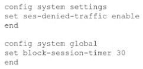
Exhibit: image72.png
AThe number of logs generated by denied traffic is reduced.✓ ANSWER
BA session for denied traffic is created.✓ ANSWER
CDenied users are blocked for 30 minutes.
DSession helpers are disabled for denied traffic.
Answer:ABMost-voted (discussion)
Community most-voted: AB (9 of 12 votes).
✅ Verified vs Fortinet docs📖 Why this answer (doc evidence)
Confirmed by MiMo-V2.5 (vision) review 2026-08-09 with exhibit image (answer IS in the CLI config): ses-denied-traffic enable creates a session for denied traffic (B) + block-session-timer 30 (seconds, not 30 min) reduces denied-traffic log spam (A). C/D false.
Community vote distribution (12 votes)
AB
9
BD
3
💬 Discussion comments (5)
👤 Sam_sgv4 months, 3 weeks ago▲ 6
The command set ses-denied-traffic enable instructs FortiGate to include sessions for denied traffic in the session table. Normally, denied traffic is dropped immediately without a session entry; this setting ensures that subsequent packets in the same flow are dropped without a new policy lookup.
Because a session entry is created for denied traffic, FortiGate does not have to perform a policy lookup or generate a new log for every individual packet in that blocked stream. Instead, it handles the flow as a single session, significantly decreasing the volume of redundant log messages.
👤 prepengine2 months, 1 week ago▲ 1
AB
Not C, timer is 30 seconds, not minutes.
Not D, nothing in this config affects session helpers.
👤 IETF14 months, 1 week ago▲ 2
The set block-session-timer 30 command configures the FortiGate firewall to keep denied sessions in the session table for 30 seconds, reducing CPU processing for repeated denied traffic from the same source. This helps optimize performance by avoiding repeated evaluations of identical denied packets.
👤 a4a6d054 months, 3 weeks ago▲ 2
B and D
+1 more comments
NAT & IP Pools4 questionsQuestion #39Topic 1
Refer to the exhibits. The exhibits show a diagram of a FortiGate device connected to the network, as well as the IP pool configuration and firewall policy objects. The WAN (port2) interface has the IP address 100.65.0.101/24. The LAN (port4) interface has the IP address 10.0.11.254/24. Which IP address will be used to source NAT (SNAT) the traffic, if the user on HQ-PC-1 (10.0.11.50) pings the IP address of BR-FGT (100.65.1.111)
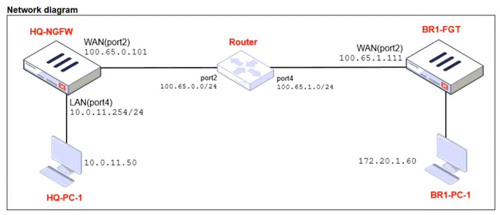
Exhibit: image35.png
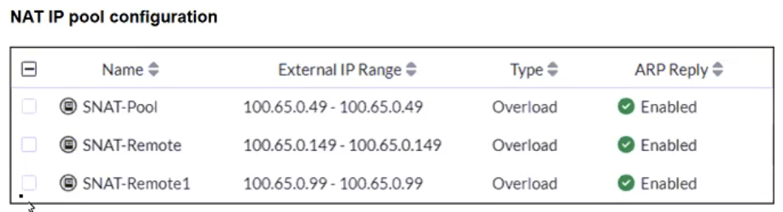
Exhibit: image36.png
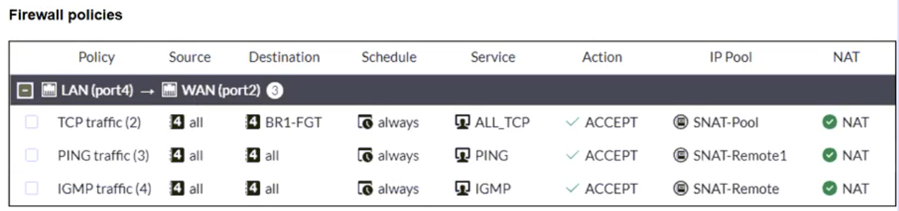
Exhibit: image37.png
A100.65.0.99✓ ANSWER
B100.65.0.101
C100.65.0.149
D100.65.0.49
Answer:AMost-voted (discussion)
Community most-voted: A (3 of 3 votes).
✅ Verified vs Fortinet docs📖 Why this answer (doc evidence)
Confirmed by MiMo-V2.5 (vision) review 2026-08-09 with exhibit images: IP pool overload picks 100.65.0.99 for the source (A).
A. 100.65.0.99 — used by the SNAT-Remote1 IP pool for PING traffic.
Question #57Topic 1
Refer to the exhibits. The exhibits show a diagram of a FortiGate device connected to the network, and the firewall policies, VIP, and IP pool configurations on the FortiGate device. The WAN (port2) interface has the IP address 100.65.0.101/24. The LAN (port4) interface has the IP address 10.0.11.254/24. The first firewall policy has NAT enabled using the IP pool. The second firewall policy is configured with a VIP as the destination address. Which IP address will be used to source NAT (SNAT) the internet traffic coming from a workstation with the IP address 10.0.11.50?
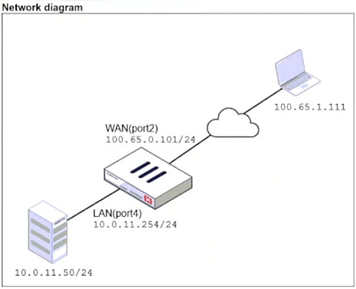
Exhibit: image48.png
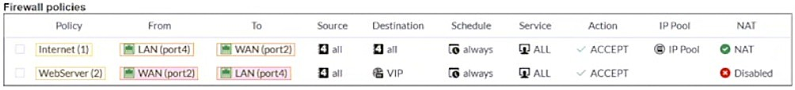
Exhibit: image49.png
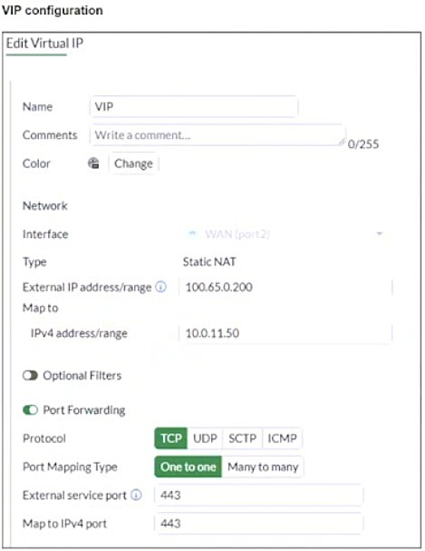
Exhibit: image50.png
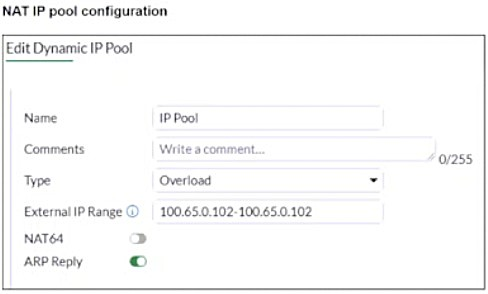
Exhibit: image51.png
A100.65.0.200
B100.65.0.102✓ ANSWER
C100.65.0.101
D10.0.11.254
Answer:BMost-voted (discussion)
Community most-voted: B (2 of 2 votes).
✅ Verified vs Fortinet docs📖 Why this answer (doc evidence)
Confirmed by MiMo-V2.5 (vision) review 2026-08-09 with exhibit images: IP pool overload on port2 selects 100.65.0.102 (B).
[Study Guide ✓] If you use an IP pool, the source address is translated to an address from that pool, rather than the egress interface address. — Guide states IP-pool SNAT translates the source to a pool address, not the egress interface IP, and dynamic pools map to the first available address — supporting B (pool start 100.65.0.102) over C (interface .101).
Traffic from the workstation 10.0.11.50 going to the internet matches the Internet(1) policy (LAN
→ WAN) which has NAT enabled and is configured to use the IP Pool. The IP pool specifies the external address 100.65.0.102.
FortiGate will perform source NAT (SNAT) on the outbound traffic, translating the source IP of the workstation to 100.65.0.102.
Question #42Topic 1
Refer to the exhibits. A diagram of a FortiGate device connected to the network VIP object and firewall policy configurations are shown. The WAN (port2) interface has the IP address 100.65.0.101/24. The LAN (port4) interface has the IP address 10.0.11.254/24. If the host 100.65.1.111 sends a TCP SYN packet on port 443 to 100.65.0.200, what will the source address, destination address, and destination port of packet be at the time FortiGate forwards the packet to the destination?
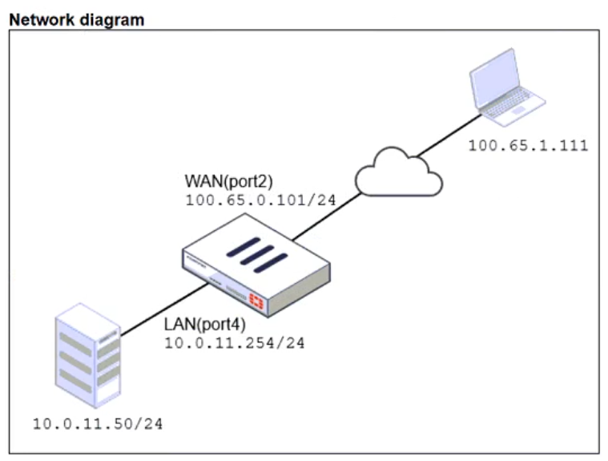
Exhibit: image38.png
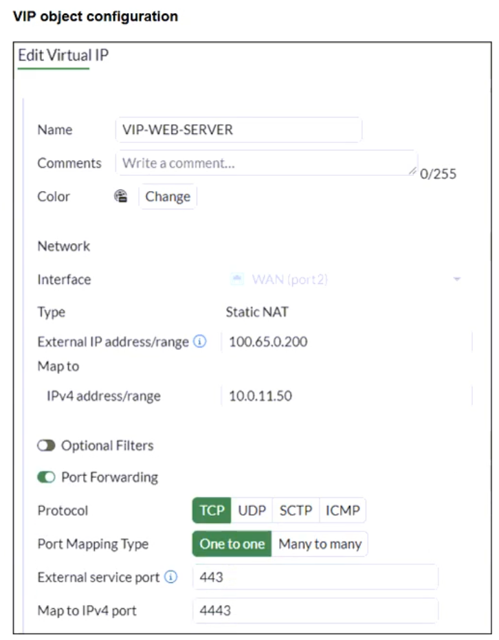
Exhibit: image39.png
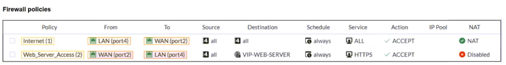
Exhibit: image40.png
A100.65.1.111,10.0.11.50, and 443 respectively
B10.0.11.254,10.0.15.50, and 4443, respectively
C100.65.1.111,10.0.11.50, and 4443, respectively✓ ANSWER
D10.0.11.254,100.65.0.200, and 443, respectively
Answer:CMost-voted (discussion)
Community most-voted: C (1 of 1 votes).
✅ Verified vs Fortinet docs📖 Why this answer (doc evidence)
Confirmed by MiMo-V2.5 (vision) review 2026-08-09 with exhibit images: VIP 100.65.1.111:4443 -> 10.0.11.50:443 (C).
VIP = Destination NAT only
Change destination IP + port
Source stays same
Question #68Topic 1
Refer to the exhibits. A diagram of a FortiGate device connected to the network, as well as the firewall policy and IP pool configuration on the FortiGate device are shown. Two PCs, PC1 and PC2, are connected behind FortiGate and can access the internet successfully. However, when the administrator adds a third PC to the network (PC3), the PC cannot connect to the internet. Based on the information shown in the exhibit, which two configuration options can the administrator use to fix the connectivity issue for PC3? (Choose two.)
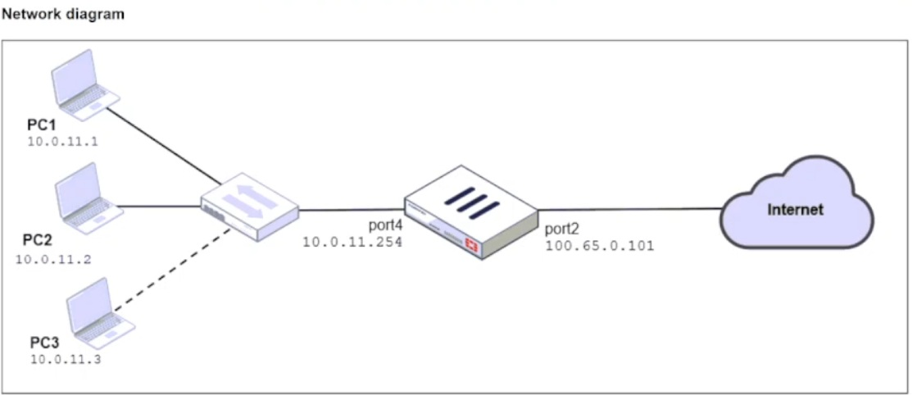
Exhibit: image60.png
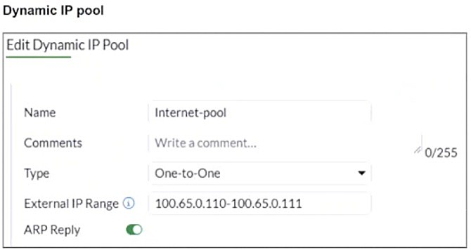
Exhibit: image61.png
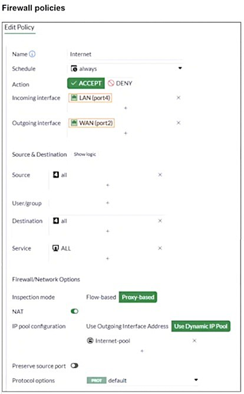
Exhibit: image62.png
AIn the IP pool configuration, set type to overload.✓ ANSWER
BIn the IP pool configuration, set endip to 100.65.0.112.✓ ANSWER
CIn the firewall policy, set match-vip to enable using CLI.
DIn the system settings, set Multiple Interface Policies to enable.
Answer:ABMost-voted (discussion)
Community most-voted: AB (1 of 1 votes).
✅ Verified vs Fortinet docs📖 Why this answer (doc evidence)
IP pool overload (type) + extended endip range for two PCs (exhibit).
[Study Guide ✓] This is dynamic SNAT which allows FortiGate to map private IP addresses to the first available public address from a pool of addresses. — Overload/dynamic pools let multiple internal hosts share pool addresses via PAT, supporting the fix of setting pool type to overload (A) and extending the pool range (B); the exact endip value depends on the unseen exhibit.
Community vote distribution (1 votes)
AB
1
💬 Discussion comments (1)
👤 Dymk32 months, 1 week ago▲ 1
A. In the IP pool configuration, set type to overload. Changing the IP pool to the overload type (Port Address Translation / PAT) allows multiple internal devices to share a single public IP address using different source ports. This eliminates the "one public IP per host" limitation that is blocking PC3.
B. In the IP pool configuration, set endip to 100.65.0.112. Expanding the IP pool's ending IP address adds another public IP to the pool, ensuring there are enough public IP addresses to support a 1:1 NAT mapping for all three internal PCs (PC1, PC2, and PC3)
Refer to the exhibit, which shows a firewall policy to enable active authentication. When attempting to access an external website using an active authentication method, the user is not presented with a login prompt. What is the most likely reason for this situation?
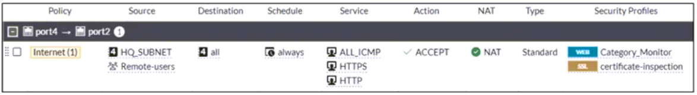
Exhibit: image6.png
AThe Service DNS is required in the firewall policy.✓ ANSWER
BThe Remote-users group is not added to the Destination.
CThe Remote-users group must be set up correctly in the FSSO configuration.
DNo matching user account exists for this user.
Answer:AOfficial + most-voted
✅ Verified vs Fortinet docs📖 Why this answer (doc evidence)
Active authentication policies require DNS service so the auth flow can resolve names (official answer A).
[Study Guide ✓] the DNS service must still be defined in the policy as allowed, in order for it to pass. — Guide: no service except DNS passes an authentication policy pre-auth, and DNS must be defined in the policy to pass; without it hostname resolution and the authentication flow fail, matching A.
Community vote distribution (11 votes)
A
10
C
1
💬 Discussion comments (5)
👤 llamaPaja4 weeks, 1 day ago▲ 1
The only reason not to present a user with the login page must be that the user is already known/authenticated to the firewall. FSSO seems to be one of the valid ways this is possible.
👤 NasimDonya3 months ago▲ 2
DNS must be allowed to do resolution. Important protocols to add for active authentication: DNS HTTPS HTTP FTP Telnet
👤 SachinNCINGA3 months, 1 week ago▲ 3
Firewall authentication generally requires the DNS service to be enabled in the firewall policy to correctly resolve hostnames during the authentication process. If DNS is not allowed in the firewall policy, the FortiGate cannot resolve external domains, and as a result, the user may not be presented with the login prompt when attempting to access an external website.
Reference:
FortiOS 7.4.1 Administration Guide: Firewall Authentication Configuration
👤 2cad5f46 months, 2 weeks ago▲ 2
Correct answer: ✅ A. The Service DNS is required in the firewall policy.
+1 more comments
Question #12Topic 1
What are two features of FortiGate FSSO agentless polling mode? (Choose two.)
AFortiGate does not support workstation check.✓ ANSWER
BFortiGate directs the collector agent to use a remote LDAP server.
CFortiGate uses the AD server as the collector agent.
DFortiGate uses the SMB protocol to read the event viewer logs from the DCs.✓ ANSWER
Answer:ADMost-voted (discussion)
Community most-voted: AD (13 of 16 votes).
✅ Verified vs Fortinet docs📖 Why this answer (doc evidence)
Doc: agentless polling 'directly polls Windows Security Event log entries' (SMB); no workstation check in agentless mode.
Answer: A, D
Explanation:
Based on the FortiOS 7.6 Administrator Guide regarding Fortinet Single Sign-On (FSSO) polling modes.
👤 madcloud5 months ago▲ 3
Agentless Polling Mode
- Similar to agent based polling but FG polls instead
- Event logging must be enabled on DC’s
- Method is only WinSecLog with two events id 4768 and 4769
- Uses SMB protocol to read the event viewer logs ( TCP 445 )
- Workstation checks is not available
👤 ANDY13136 months, 1 week ago▲ 4
From the FortiOS_7.6_Administrator_Study_Guide:
Agentless Polling Mode
• Similar to agent-based polling, but FortiGate polls instead
• Doesn't require an external DC agent or collector agent
FortiGate collects the data directly
• Event logging must be enabled on the DCs
• More CPU and RAM required by FortiGate
• Support for polling option WinSecLog onlv
FortiGate uses the SMB protocol to read the event viewer logs
•Fewer available features than collector agent-based polling mode
•FortiGate doesn't poll workstation
Workstation verification is not available in agentless polling
👤 Char_Flamingo6 months, 2 weeks ago▲ 1
Agentless polling mode operates in a similar way to WinSecLog, but with only two event IDs: 4768 and 4769.
Because there's no collector agent, FortiGate uses the SMB protocol to read the event viewer logs from the DCs.
In agentless polling mode, FortiGate acts as a collector. It is responsible for polling on top of its normal ESSO tasks but does not have all the extra features, such as workstation checks, that are available with the external collector agent.
Page 184
+5 more comments
Question #30Topic 1
What are two features of collector agent advanced mode? (Choose two.)
AAdvanced mode supports nested or inherited groups.✓ ANSWER
BAdvanced mode uses the Windows convention-NetBios: Domain\Username.
CIn advanced mode, FortiGate can be configured as an LDAP client and group filters can be configured on FortiGate.✓ ANSWER
DIn advanced mode, security profiles can be applied only to user groups, not individual users.
Answer:ACMost-voted (discussion)
Community most-voted: AC (2 of 2 votes).
✅ Verified vs Fortinet docs📖 Why this answer (doc evidence)
Confirmed by MiMo-V2.5 (vision) review 2026-08-09 against FSSO docs: advanced mode = nested/inherited groups (A), NetBios Domain\Username (B), AND FortiGate as LDAP client with group filters (C). Community answer AC correct; MIMO's initial AB was wrong.
[Study Guide ✓] Advanced mode supports nested or inherited groups ... In advanced mode, you can configure FortiGate as an LDAP client and configure the group filters on FortiGate. — Both A and C are stated verbatim features of collector-agent advanced mode; B is standard-mode naming (NetBios Domain\groups), and advanced mode allows per-user policies, refuting D.
Correct answers: A and C
✅ A. Advanced mode supports nested/inherited groups
In collector agent advanced mode, it integrates with AD more deeply
It can resolve:
Nested groups
Inherited memberships
👉 More accurate user-group mapping
✅ C. FortiGate can act as LDAP client with group filters
In advanced mode:
FortiGate firewall can query AD via LDAP
You can configure group filters on FortiGate
👉 Gives more control over which groups are used
❌ Why others are wrong
B ❌
Domain\Username (NetBIOS format) is not specific to advanced mode
Used generally in FSSO
D ❌
Security profiles can be applied to:
Users OR groups
Not limited to groups only
👤 e1e8ebe4 months, 1 week ago▲ 1
From https://community.fortinet.com/t5/FortiGate/Technical-Tip-How-to-switch-FSSO-operation-mode-from-Standard/ta-p/194343
FSSO has two modes of operation: Standard Mode and Advanced Mode.
Standard: The FSSO Collector Agent receives group information from the DC Agent in the NetBIOS domain\user format.
Advanced: The FSSO Collector Agent obtains user group information using LDAP. The benefit of this method is that it is possible to nest groups within groups. The group information is in standard LDAP format 'CN=myGroup,OU=myOrganizationUnit,DC=myDomain'. In this mode, the monitored groups are specified on the FortiGate.
....
so A and C
Question #31Topic 1
A new administrator is configuring FSSO authentication on FortiGate using DC Agent Mode. Which step is not part of the expected process?
AThe user logs into the windows domain.
BFortiGate determines user identity based on the IP address in the FSSO list.
CThe DC agent sends login event data directly to FortiGate.✓ ANSWER
DThe collector agent forwards login event data to FortiGate.
Answer:CMost-voted (discussion)
Community most-voted: C (11 of 14 votes).
✅ Verified vs Fortinet docs📖 Why this answer (doc evidence)
Doc: 'DC agents monitor user logon events and pass the information to the Collector agent, which... sends it to the FortiGate' — DC agent never sends directly to FortiGate.
[Study Guide ✓] The DC agent sees the login event, and forwards it to the collector agent. 3. The collector agent aggregates all login events and forwards that information to FortiGate. — DC-agent mode flow sends login events DC agent -> collector agent -> FortiGate; 'DC agents monitor and forward user login events to the collector agents'. The DC agent never sends directly to FortiGate, so C is the step not part of the process.
Community vote distribution (14 votes)
C
11
D
3
💬 Discussion comments (10)
👤 SachinNCINGA3 months, 1 week ago▲ 2
Correct answer: C
DC Agent Mode flow (how it really works)
User logs into Windows domain
DC Agent (on Domain Controller) detects logon event
DC Agent → Collector Agent
Collector Agent → FortiGate
FortiGate maps IP → user
👤 a3725bf3 months, 3 weeks ago▲ 2
In DC Agent Mode, the communication path is a three-tier architecture. The Domain Controller (DC) does not have the "intelligence" to communicate with the FortiGate directly; it relies on a middleman.
👤 andrpercud3 months, 3 weeks ago▲ 1
The correct answer is:
D. The collector agent forwards login event data to FortiGate.
Explanation
In DC Agent Mode on FortiGate, the expected process is:
User logs into the Windows domain
DC Agent captures the login event
DC Agent sends the login event data directly to FortiGate
FortiGate maps the user identity based on the IP address
Why option D ?
D introduces the Collector Agent, which is not used in DC Agent Mode
The Collector Agent is only part of Collector Agent Mode, not DC Agent Mode
👤 NasimDonya3 months ago▲ 1
It is C.IT is collector agent sending login events to fortigate and not DC agent
+6 more comments
Question #35Topic 1
Refer to the exhibit, which contains a RADIUS server configuration. An administrator added a configuration for a new RADIUS server. While configuring, the administrator enabled Include in every user group. What is the impact of enabling Include in every user group in a RADIUS configuration?
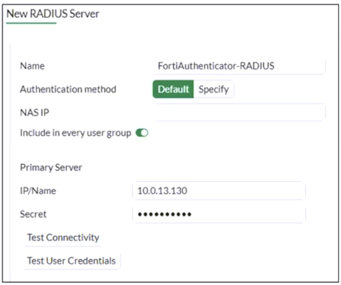
Exhibit: image33.png
AThis option places the RADIUS server, and all users who can authenticate against that server, into every FortiGate user group.✓ ANSWER
BThis option places all FortiGate and groups required to authenticate into the RADIUS server, which, in this case, is FortiAuthenticator.
CThis option places all users into every RADIUS user group, including groups that are used for the LDAP server on FortiGate.
DThis option places the RADIUS server, and all users who can authenticate against that server, into every RADIUS group.
Answer:AMost-voted (discussion)
Community most-voted: A (2 of 2 votes).
✅ Verified vs Fortinet docs📖 Why this answer (doc evidence)
'Include in every user group' puts RADIUS users into every FortiGate user group.
[Study Guide ✓] The Include in every User Group option adds the RADIUS server and all users who can authenticate against it, to every user group created on FortiGate. — Verbatim match: RADIUS server plus all its users are added to every FortiGate (not RADIUS-side) user group, which is precisely choice A.
Community vote distribution (2 votes)
A
2
💬 Discussion comments (1)
👤 SachinNCINGA3 months, 1 week ago▲ 2
By selecting the "Include in every user group" option in the RADIUS configuration, FortiGate automatically includes this RADIUS server as an authentication source for all user groups. This means any user group configured on the FortiGate will authenticate using this RADIUS server, allowing users to authenticate against the server for any group they belong to.
Question #46Topic 1
Which statement correctly describes NetAPI polling mode for the FSSO collector agent?
AThe collector agent must search Windows application event logs.
BThe NetSessionEnum function is used to track user logouts.✓ ANSWER
CNetAPI polling can increase bandwidth usage in large networks.
DThe collector agent uses a Windows API to query DCs for user logins.
Answer:BMost-voted (discussion)
Community most-voted: B (8 of 11 votes).
✅ Verified vs Fortinet docs📖 Why this answer (doc evidence)
Doc: 'the Collector agent can optionally obtain logon information by polling the AD domain controllers' via Windows API (NetSessionEnum).
Community vote distribution (11 votes)
B
8
D
3
💬 Discussion comments (6)
👤 sgabar3 months, 1 week ago▲ 1
Quando il Collector Agent FSSO (Fortinet Single Sign-On) lavora in modalità di polling NetAPI, non si mette a leggere i file di registro del server. Invece, interroga direttamente il Domain Controller (DC
👤 a3725bf3 months, 2 weeks ago▲ 3
The correct answer is B. The NetSessionEnum function is used to track user logouts.
NetAPI (Page 270): Focuses on the Active Session List. It is faster and "cleaner" for identifying when a session ends, but it can occasionally miss a logon if the user logs in and immediately logs out between the agent's polling intervals (which are typically every few seconds).
👤 b0d20864 months, 2 weeks ago▲ 2
In NetAPI mode, the FSSO Collector Agent polls the domain controllers using Windows NetAPI functions. NetSessionEnum doesn’t read events; it just reflects current active sessions, which implies who is logged in.
👤 Sam_sgv4 months, 2 weeks ago▲ 2
Which statement correctly describes NetAPI polling mode for the FSSO collector agent?
A. The collector agent must search Windows application event logs.
B. The NetSessionEnum function is used to track user logouts.
C. NetAPI polling can increase bandwidth usage in large networks.
D. The collector agent uses a Windows API to query DCs for user logins.
+2 more comments
Question #58Topic 1
Refer to the exhibit, which shows a partial configuration from the remote authentication server. Why does the FortiGate administrator need this configuration?
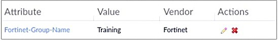
Exhibit: image52.png
ATo authenticate only the Training user group.✓ ANSWER
BTo authenticate Any FortiGate user groups.
CTo authenticate and match the Training OU on the RADIUS server.
DTo set up a RADIUS server Secret.
Answer:AMost-voted (discussion)
Community most-voted: A (3 of 3 votes).
✅ Verified vs Fortinet docs📖 Why this answer (doc evidence)
RADIUS server group filter 'Training' => only Training user group authenticates.
Community vote distribution (3 votes)
A
3
💬 Discussion comments (1)
👤 SachinNCINGA3 months, 1 week ago▲ 3
The attribute shown in the exhibit is Fortinet-Group-Name = Training. This is a Fortinet RADIUS Vendor-Specific Attribute (VSA) used to return group membership information to FortiGate. FortiGate uses that returned value to match the authenticated user to the corresponding FortiGate user group, in this case Training.
That is why A is correct: the administrator needs this so FortiGate can authenticate users and place or match them into the Training group for identity-based policy control.
Question #66Topic 1
An administrator suspects that the Collector Agent is not forwarding login events to FortiGate. What is the most effective troubleshooting step?
AVerify if DC agent is enabled on the FortiGate.
BRestart the domain controller to refresh authentication services.
CCheck if TCP port 8000 is open between the collector agent and FortiGate.✓ ANSWER
DVerify if FortiGate is set to use LDAP authentication instead of FSSO.
Answer:CGoogle AI Overview
FSSO Collector Agent to FortiGate communication uses TCP port 8000 — check it is open. (Google AI Overview; FSSO doc.)
✅ Verified vs Fortinet docs📖 Why this answer (doc evidence)
Doc: 'The CA communicates with the FortiGate over TCP port 8000'.
[Study Guide ✓] The collector agent communicates with FortiGate over TCP port 8000 (default) — Guide documents TCP 8000 as the collector-agent-to-FortiGate login-event channel, so verifying that port is open is the supported troubleshooting step — answer C.
Question #74Topic 1
You have configured the FortiGate device for FSSO. A user is successful in log-in to windows, but their access to the internet is denied. What should the administrator check first?
AThe FortiGate firewall policy settings for SSL decryption.
BThe FortiGate FSSO active users list for user’s IP address.✓ ANSWER
CThe windows event viewer for failed login attempts.
DWhether the user is assigned to the correct AD group.
Answer:BMost-voted (discussion)
Community most-voted: B (1 of 1 votes).
✅ Verified vs Fortinet docs📖 Why this answer (doc evidence)
Check FSSO active users list for the user's IP — first troubleshooting step for FSSO auth failures.
[Study Guide ✓] To display the list of FSSO users that are currently logged in, use the CLI command diagnose debug authd fsso list. For each user, the user name, user group, IP address, — FSSO troubleshooting passage presents listing currently logged-in FSSO users with name, group, and IP address as the verification step - consistent with checking the FSSO active users list for the user's IP.
Community vote distribution (1 votes)
B
1
💬 Discussion comments (1)
👤 45855d42 weeks, 2 days ago▲ 1
The FSSO chain works like this:
Windows login → DC event log → Collector Agent → FortiGate FSSO user list → policy match → access
The user successfully logged in to Windows, so the chain started correctly. The very next link — and the first thing to verify on the FortiGate — is whether the login event actually made it to the FortiGate's active FSSO user list with the correct IP address:
diagnose debug authd fsso list
If the user/IP mapping is missing or stale, FortiGate can't match them to any identity-based policy → traffic hits the implicit deny → internet blocked. This single check immediately tells you whether the problem is upstream (collector agent, DC polling, event forwarding) or downstream (policy/group configuration).
Question #75Topic 1
A FortiGate firewall policy is configured with active authentication, however, the user cannot authenticate when accessing a website. Which protocol must FortiGate allow even through the user cannot authenticate?
ATACACS+
BDNS✓ ANSWER
CLDAP
DKerberos
Answer:BMirror exam vote (FCP)
Same question in FCP_FGT_AD-7.4 topic 1 Q52 discussion — most voted answer: DNS. With active authentication, FortiGate must still allow DNS for captive portal/auth flow.
✅ Verified vs Fortinet docs📖 Why this answer (doc evidence)
Active authentication flow needs DNS allowed before user authenticates (mirror FCP vote B).
[Study Guide ✓] No service (with the exception of DNS) is allowed through the firewall policy before successful user authentication. — Guide states only DNS passes through the policy before successful authentication, and DNS is also allowed if authentication is unsuccessful - directly supports answer B.
Question #78Topic 1
An administrator configured a FortiGate device to act as a collector for agentless polling mode. What must the administrator add to the FortiGate device to retrieve AD user group information?
ARADIUS server
BTACACS server
CLDAP server✓ ANSWER
DKeycloak server
Answer:CMirror exam vote (FCP)
Same question in FCP_FGT_AD-7.4 topic 1 Q33 discussion — most voted: LDAP server. FSSO agentless polling requires an LDAP server to retrieve AD user group info. (Google AI Overview agrees: LDAP.)
✅ Verified vs Fortinet docs📖 Why this answer (doc evidence)
Doc: agentless polling — 'match users to user groups from a LDAP server'.
A network administrator has enabled full SSL inspection and web filtering on FortiGate. When visiting any HTTPS websites, the browser reports certificate warning errors. When visiting HTTP websites, the browser does not report errors. What is the reason for the certificate warning errors?
AThe matching firewall policy is set to proxy inspection mode.
BThe option invalid SSL certificates is set to allow on the SSL/SSH inspection profile.
CThe certificate used by FortiGate for SSL inspection does not contain the required certificate extensions.
DThe browser does not trust the certificate used by FortiGate for SSL inspection.✓ ANSWER
Answer:DOfficial + most-voted
✅ Verified vs Fortinet docs📖 Why this answer (doc evidence)
SSL inspection: browsers must trust the FortiGate-issued CA certificate; warning => CA not trusted (official answer D).
[Study Guide ✓] This is because the browser is receiving certificates signed by FortiGate, which is a CA it does not know and trust. — Full SSL inspection with the self-signed FortiGate CA makes browsers warn on every HTTPS connection because they do not trust FortiGate-signed certificates — exactly choice D; HTTP sites are unaffected.
Community vote distribution (5 votes)
D
5
💬 Discussion comments (3)
👤 rafteles1 month ago▲ 1
D. When Full SSL Inspection is enabled, the FortiGate performs a process known as SSL/TLS Interception (or authorized Man-in-the-Middle).
This is exactly the behavior described in the question:
HTTPS → displays a certificate warning.
HTTP → does not use TLS certificates, so it does not display an error.
👤 SachinNCINGA3 months, 1 week ago▲ 2
With full SSL inspection, FortiGate:
Decrypts HTTPS traffic
Re-signs it using its own certificate (CA)
If that FortiGate CA is not installed/trusted in the browser/device →
Browser shows certificate warning
👤 SachinNCINGA3 months, 1 week ago▲ 2
With full SSL inspection, FortiGate:
Decrypts HTTPS traffic
Re-signs it using its own certificate (CA)
If that FortiGate CA is not installed/trusted in the browser/devic
Question #11Topic 1
Refer to the exhibit. The predefined deep-inspection and custom-deep-inspection profiles exclude some web categories from SSL inspection, as shown in the exhibit. For which two reasons are these web categories exempted? (Choose two.)
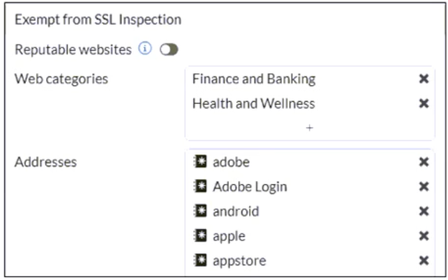
Exhibit: image9.png
AThe FortiGate temporary certificate denies the browser’s access to websites that use HTTP Strict Transport Security.✓ ANSWER
BThe resources utilization is optimized because these websites are in the trusted domain list on FortiGate.
CThese websites are in an allowlist of reputable domain names maintained by FortiGuard.
DThe legal regulation aims to prioritize user privacy and protect sensitive information for these websites.✓ ANSWER
Answer:ADMost-voted (discussion)
Community most-voted: AD (10 of 12 votes).
✅ Verified vs Fortinet docs📖 Why this answer (doc evidence)
HSTS is not enabled in any of the listed sites and reputable domains are not enabled. As a result B,D are correct
👤 SachinNCINGA3 months, 1 week ago▲ 3
A. HSTS issue
Some websites (especially banking/secure ones) use HSTS (HTTP Strict Transport Security)
When FortiGate does deep SSL inspection, it replaces the certificate → browser sees it as untrusted
Result: site may break or be blocked
So they are excluded to avoid access issues
D. Privacy & legal reasons
Categories like:
Finance & Banking
Health & Wellness
These handle sensitive personal data
Many regulations (GDPR, privacy laws) → you should NOT inspect/decrypt this traffic
So FortiGate exempts them to protect privacy
👤 a3725bf3 months, 3 weeks ago▲ 1
This configuration is found within the SSL/SSH Inspection Profile. It allows administrators to bypass the "Man-in-the-Middle" decryption process for specific types of traffic.
• C. Reputable Domain Names (FortiGuard):
The addresses shown (Adobe, Apple, Appstore) are part of a predefined list of reputable domain names maintained by FortiGuard.
• D. Privacy and Sensitive Information:
The categories Finance and Banking and Health and Wellness are exempted primarily for legal and privacy compliance (such as GDPR or HIPAA).
👤 LuisOrtega276 months ago▲ 3
The categories are exempt from SSL Deep Inspection because:
✔️ A. Technical issues with HSTS and certificate pinning
✔️ D. Legal and privacy requirements
+1 more comments
Question #27Topic 1
Refer to the exhibit. What would be the impact of these settings on the Server certificate SNI check configuration on FortiGate?
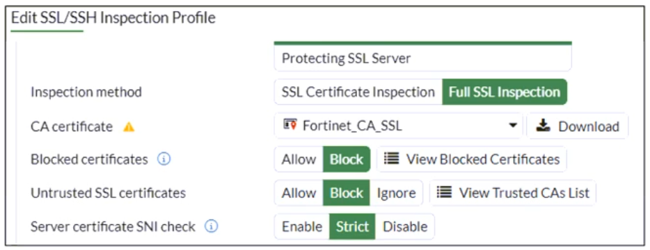
Exhibit: image24.png
AFortiGate will close the connection if the SNI does not match the CN and SAN fields.
BFortiGate will accept the connection with a warning if the SNI does not match the CN or SAN fields.
CFortiGate will close the connection if the SNI does not match the CN or SAN fields.✓ ANSWER
DFortiGate will accept and use the CN in the server certificate for URL filtering if the SNI does not match the CN or SAN fields.
Answer:CMost-voted (discussion)
Community most-voted: C (5 of 6 votes).
✅ Verified vs Fortinet docs📖 Why this answer (doc evidence)
Server certificate SNI check with close action terminates connection when SNI mismatches CN/SAN.
C. A - Incorrect wording ("CN and SAN" instead of "CN or SAN").
👤 NasimDonya3 months ago▲ 1
Anser is C .Even if you check the GUI of FGT for SSL inspection-Check the SNI with the CN or SAN field
👤 SachinNCINGA3 months, 1 week ago▲ 1
Check the SNI in the hello message with the CN or SAN field in the returned server certificate.
Enable: If mismatched, use the CN in the server certificate to do URL filtering.
Strict: If mismatched, close the connection.
Disable: Server certificate SNI check is disabled.
https://docs.fortinet.com/document/fortigate/7.0.0/administration-guide/505842/certificate-inspection
👤 NasimDonya3 months ago▲ 1
So, answer should be C
+2 more comments
Web Filtering4 questionsQuestion #8Topic 1
You have created a web filter profile named restrict_media-profile with a daily category usage quota. When you are adding the profile to the firewall policy, the restrict_media-profile is not listed in the available web profile drop down. What could be the reason?
AThe inspection mode in the firewall policy is not matching with web filter profile feature set.✓ ANSWER
BThe web filter profile is already referenced in another firewall policy.
CThe naming convention used in the web filter profile is restricting it in the firewall policy.
DThe firewall policy is in no-inspection mode instead of deep-inspection.
Answer:AOfficial + most-voted
✅ Verified vs Fortinet docs📖 Why this answer (doc evidence)
Doc: 'The feature set setting (proxy or flow) in the web filter profile must match the inspection mode setting (proxy or flow) in the associated firewall policy' — mismatched profiles are not listed.
On the FortiGate, security profiles (such as Web Filter, Application Control, IPS, etc.) are created with a specific feature set, which can be:
Flow-based
Proxy-based
If there is an incompatibility, the profile will not appear in the policy's drop-down list.
This is exactly the behavior described in the question.
👤 SachinNCINGA3 months, 1 week ago▲ 2
Web filter profiles (especially with features like quota) require a specific inspection mode
If the policy is using:
Flow-based vs Proxy-based mismatch
The profile will NOT appear in dropdown
👤 2cad5f46 months, 2 weeks ago▲ 2
Correct answer: ✅ A. The inspection mode in the firewall policy is not matching with web filter profile feature set.
👤 mupfl6 months, 3 weeks ago▲ 2
"Some features of security profiles, such as quota in Web Filter, require the policy to use proxy-based inspection. If the policy is set to flow-based mode, profiles that use those features will not be selectable."
Question #28Topic 1
Refer to the exhibits. A web filter profile configuration and firewall policy configuration are shown. You are trying to access www.facebook.com , but you are redirected to a FortiGuard web filtering block page. Based on the exhibits, what is the possible cause of the issue?
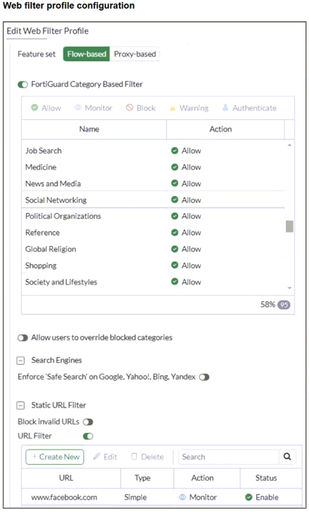
Exhibit: image25.png
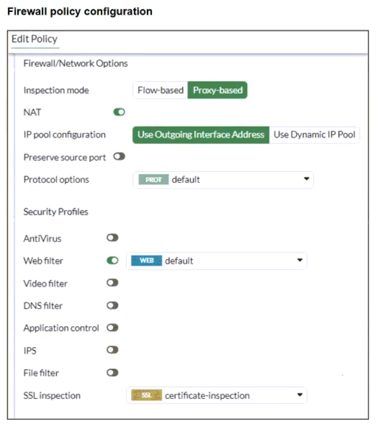
Exhibit: image26.png
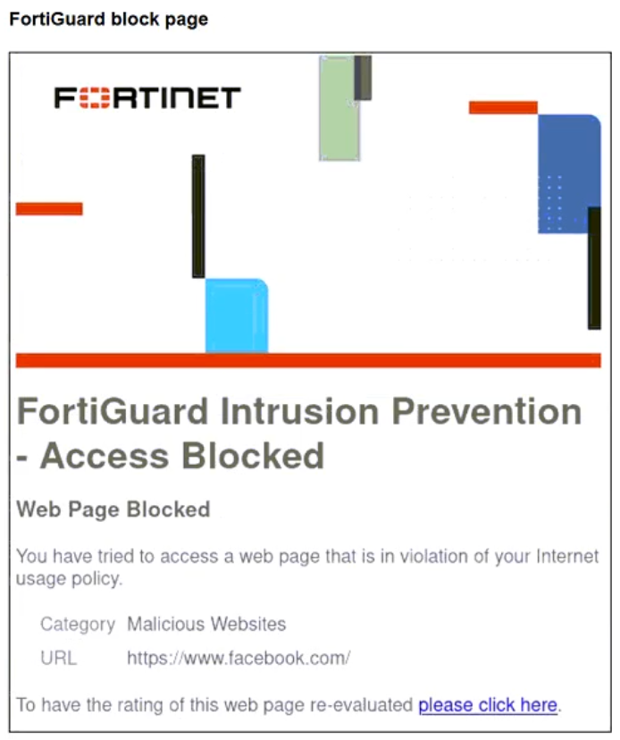
Exhibit: image27.png
AThe web rating override configuration is incorrect.
BThe firewall policy inspection mode is incorrect.✓ ANSWER
CFor www.facebook.com, the URL filter action is incorrect.
DThe web filter profile feature set is configured incorrectly.
Answer:BFortinet docs verified
FortiOS inspection-mode feature comparison: proxy-only web filter features (e.g. Web Profile Override, Category Usage Quota) do NOT work when the firewall policy inspection mode is flow-based. A proxy-feature web filter profile on a flow policy fails to apply overrides → FortiGuard block page.
✅ Verified vs Fortinet docs📖 Why this answer (doc evidence)
Proxy-only web filter features (e.g., web profile override) don't apply on flow policy; inspection-mode mismatch causes block page.
I believe it’s answer A. Facebook should be recognized as Social Networking, but instead it’s categorized as a Malicious Website, which I can only explain as the result of a web rating override.
👤 SlyNZ991 month ago▲ 2
there's only one way that facebook has been categorised as Malicious and that is option A
👤 luning1 month, 1 week ago▲ 1
C is correct, action must be changed exempt.
If the static URL filter action is set to “monitor/allow,” FortiGate performs the category check in the following order.
Since it was blocked by the category check, it must be set to “exempt.”
## FortiOS 7.6 Administrator Study Guide 299 page
👤 SachinNCINGA3 months, 1 week ago▲ 1
The Web Filter profile is configured with Feature set = Flow-based.
The Firewall policy is configured with Inspection mode = Proxy-based and has Web Filter enabled.
+12 more comments
Question #59Topic 1
Refer to the exhibits. An administrator configured the Web Filter Profile to block access to all social networking sites except Facebook. However, when users try to access Facebook.com, they are redirected to a FortiGuard web filtering block page. Based on the exhibits, which configuration change must the administrator make to allow Facebook while blocking all other social networking sites?
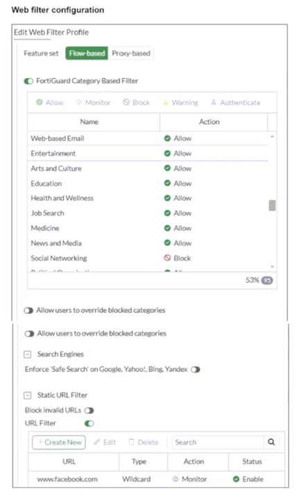
Exhibit: image53.png
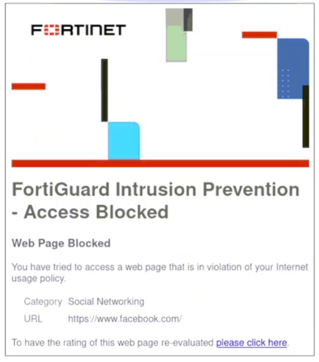
Exhibit: image54.png
ASet the Social Networking action as warning in the FortiGuard Category Based Filter.
BChange the Feature set of Web Filter Profile as Proxy-based.
CSet the Action as Exempt for www.facebook.com in the Static URL Filter.✓ ANSWER
DChange the type as Simple in the Static URL Filter section.
Answer:CMost-voted (discussion)
Community most-voted: C (1 of 1 votes).
✅ Verified vs Fortinet docs📖 Why this answer (doc evidence)
Static URL filter with Action=Exempt for facebook.com bypasses category block.
[Study Guide ✓] You can configure one of four actions: • Exempt allows the traffic from trusted sources to bypass all security inspections. — Static URL filter is inspected first, before FortiGuard category filtering; its Exempt action bypasses subsequent web filtering, so exempting www.facebook.com overrides the Social Networking category block — supporting C.
C. [True] Exempt - The traffic is allowed to bypass the remaining FortiGuard web filters, web content filters, web script filters, antivirus scanning, and DLP proxy operations.
Question #52Topic 1
Refer to the exhibit. The exhibit shows the FortiGuard Category Based Filter section of a corporate web filter profile. An administrator must block access to download.com, which belongs to the Freeware and Software Downloads category. The administrator must also allow other websites in the same category. What are two solutions for satisfying the requirement? (Choose two.)
Exhibit: image46.png
AConfigure a web override rating for download.com and select Malicious Websites as the subcategory.✓ ANSWER
BConfigure a static URL filter entry for download.com with Type and Action set to Wildcard and Block, respectively.✓ ANSWER
CSet the Freeware and Software Downloads category Action to Warning.
DConfigure a separate firewall policy with action Deny and an FQDN address object for *. download.com as destination address.
Answer:ABMost-voted (discussion)
Community most-voted: AB (7 of 7 votes).
✅ Verified vs Fortinet docs📖 Why this answer (doc evidence)
Static URL filter (wildcard, block) or web rating override for download.com.
A and B-Web Rating override and static URL filter can fix issue rather than creating separate policy.
👤 SachinNCINGA3 months, 1 week ago▲ 2
FortiGate Security 7.2 Study Guide (p.268-269): "If you want to make an exception, for example, rather than unblock access to a potentially unwanted category, change the website to an allowed category. You can also do the reverse. You can block a website that belongs to an allowed category." "Static URL filtering is another web filter feature. Configured URLs in the URL filter are checked against the visited websites. If a match is found, the configured action is taken. URL filtering has the same patterns as static domain filtering: simple, regular expressions, and wildcard."
👤 a3725bf3 months, 2 weeks ago▲ 4
A and B fit better for this question because they are both Dealing with the Web Filtering side of things. Sure its Not the best way but D is Firewall rule based and the question is around WebFlitering. All Three will get the Job done but Based of the Exhibit they want A
Application Control5 questionsQuestion #10Topic 1
Refer to the exhibits. You have implemented the application sensor and the corresponding firewall policy as shown in the exhibits. Which two factors can you observe from these configurations? (Choose two.)
Exhibit: image7.pngExhibit: image8.png
AYouTube search is allowed based on the Google Application and Filter override settings.
BFacebook access is blocked based on the category filter settings.✓ ANSWER
CFacebook access is allowed but you cannot play Facebook videos based on Video/Audio category filter settings.
DYouTube access is blocked based on Excessive-Bandwidth Application and Filter override settings.✓ ANSWER
Answer:BDOfficial + most-voted
✅ Verified vs Fortinet docs📖 Why this answer (doc evidence)
B and D. You tube falls into Excessive BWD and according to App override filter , it would be blocked. Facebook is the social media category and it is blocked by that
👤 SlyNZ991 month ago▲ 1
Youtube search is under the excessive bandwidth behaviour and googel vendor, given that the behaviour is first in the override section that will block search as it matches
👤 luning1 month, 1 week ago▲ 1
Application Scan order
1. Application and filter override
2. Categories
=> Youtube is blocked by application and filter Override Excessive BWD
=> facebook blocked by Social media Category
👤 SachinNCINGA3 months, 1 week ago▲ 2
Facebook belongs to the Social Media application category, which is set to Block in the application sensor. Therefore, any Facebook application traffic is blocked by category.
The Google application override is set to Monitor, which means traffic is allowed, just logged.
The Video/Audio category (which includes YouTube video playback) is blocked, but this does not block YouTube Search, which is just browsing and searching on the site, is not blocked by the Video/Audio category unless the actual video stream starts.
+8 more comments
Question #21Topic 1
Refer to the exhibits. You have implemented the application sensor and the corresponding firewall policy as shown in the exhibits. You cannot access any of the Google applications, but you are able to access www.fortinet.com Which two actions would you take to resolve the issue? (Choose two.)
Exhibit: image16.pngExhibit: image17.png
AChange the Inspection mode to Flow-based.
BSet the action for Google in the Application and Filter Overrides section to Allow.
CAdd “Google”.com to the URL category in the security profile.
DSet SSL inspection to deep-content inspection.✓ ANSWER
EMove up Google in the Application and Filter Overrides section to set its priority to 1.✓ ANSWER
Answer:DEMost-voted (discussion)
Community most-voted: DE (15 of 19 votes).
✅ Verified vs Fortinet docs📖 Why this answer (doc evidence)
Google apps are HTTPS — need deep SSL inspection for app control visibility; override priority determines match.
[Study Guide ✓] The priority in which application and filter overrides are placed takes precedence. — Example shows a higher-placed filter override blocks an app set to Monitor - mechanism behind E (move Google override to top). D (deep-content SSL inspection) is not addressed; support covers E only.
D. You need to decode the HTTPS to determine that this is a Google app.
E. The order of the rules matters. Google Docs and Google Drive are both Excessive-Bandwidth risks. Therefore, you need to raise it for these apps to work.
A. Doesn't make sense.
B. Monitor and Allow both allow traffic; they differ in how they log.
C. Google apps aren't limited to the google.com URL.
👤 f2ed5341 month, 3 weeks ago▲ 1
Question is a little unspecific. What issue? It is not described. The behavior could be intended. B
👤 prepengine3 months ago▲ 4
B doesn't make a difference. Monitor = allow plus log.
👤 NasimDonya3 months ago▲ 1
The application override rule for Google should be moved higher .So, it matches that one first and I believe we need deep inspection to categorize Google app
+1 more comments
Question #65Topic 1
Refer to the exhibits. The exhibits show the application sensor configuration and the Excessive-Bandwidth and Apple filter details. Based on the configuration, what will happen to Apple FaceTime if there are only a few calls originating or incoming?
AApple FaceTime will be allowed, based on the Video/Audio category configuration.
BApple FaceTime will be allowed, based on the Apple filter configuration.
CApple FaceTime will be allowed only if the Apple filter in Application and Filter Overrides is set to Allow.
DApple FaceTime will be blocked, based on the Excessive-Bandwidth filter configuration.✓ ANSWER
Answer:DMost-voted (discussion)
Community most-voted: D (7 of 8 votes).
✅ Verified vs Fortinet docs📖 Why this answer (doc evidence)
Excessive-Bandwidth filter with block action => FaceTime blocked regardless of Apple filter.
[Study Guide ✓] the filter override (Excessive-Bandwidth) is blocked and, since Dailymotion falls under the excessive bandwidth category, Dailymotion is blocked even though it is set to Monitor in the Application — Guide example mirrors the scenario: a blocking Excessive-Bandwidth filter override placed above application overrides takes precedence and blocks apps falling under it — matching D for FaceTime.
B. Apple FaceTime will be allowed, based on the Apple filter configuration.
Technical Explanation
In the Aoplication Sensor, there are two configured Application and Filter Overrides:
Excessive-Bandwidth → Block (Priority 1)
Apple → Monitor (Priority 2)
FaceTime belongs to the Apple vendor filter, and it may also match the Excessive-Bandwidth filter when bandwidth usage is high.
However, the question states that there are only a few incoming or outgoing calls, meaning FaceTime is not consuming excessive bandwidth.
FortiGate Evaluation Logic
Since FaceTime is using low bandwidth, it does not match the Excessive-Bandwidth filter.
It does match the Apple filter, whose action is Monitor.
The Monitor action means the traffic is allowed and logged.
👤 a3725bf3 months, 2 weeks ago▲ 2
Apple FaceTime will be blocked, based on the Excessive-Bandwidth filter configuration.
Step 1 (Priority 1 Overide): The first override in the list is the Excessive-Bandwidth filter. Looking at the "Application override configuration" exhibit, we can see that FaceTime is a member of this filter, and the configured action is Block.
• The Result: Because the FortiGate finds a match at Priority 1, it immediately applies the Block action and stops processing further
👤 Chuck_IT4 months, 2 weeks ago▲ 3
n this specific context (as an application filter), the filter does not measure real-time traffic volume or wait for a user to hit a certain limit. If an application is on the "Excessive-Bandwidth" list and the filter's action is set to Block, that application is blocked from the first packet.
Question #17Topic 1
You have configured an application control profile, set peer-o-peer traffic to Block under the Categories tab, and applied it to the firewall policy. However, you peer-to-peer traffic on known ports is passing through the FortiGate without being blocked. What FortiGate settings should you check to resolve this issue?
AReplacement Messages for UDP-based Applications
BNetwork Protocol Enforcement✓ ANSWER
CApplication and Filter Overrides
DFortiGuard category ratings
Answer:BMost-voted (discussion)
Community most-voted: B (14 of 19 votes).
✅ Verified vs Fortinet docs📖 Why this answer (doc evidence)
Network Protocol Enforcement blocks P2P traffic on well-known ports regardless of category action.
Community vote distribution (19 votes)
B
14
C
5
💬 Discussion comments (8)
👤 bd1f29b2 months, 3 weeks ago▲ 1
Overrides take precedence over category‑based actions.
So even if the P2P category is set to Block
Network Protocol Enforcement
This feature checks protocol compliance (e.g., HTTP on port 80). It does not override application control decisions.
👤 prepengine3 months ago▲ 2
The answer is B, but you should check 'C' too in real life (overrides can bypass category actions), but it is not the primary reason for traffic on known ports bypassing the category block.
👤 SachinNCINGA3 months, 1 week ago▲ 2
Network Protocol Enforcement settings control how FortiGate inspects and enforces protocols on
traffic, including peer-to-peer applications on known ports. If not properly enabled, peer-to-peer
traffic may bypass blocking despite the application control profile.
👤 sky18123 months, 1 week ago▲ 2
You have already:
Blocked peer-to-peer (P2P) under Application Control Categories
Applied the profile to the firewall policy
Yet traffic is still passing because:
👉 P2P applications can use well-known ports (e.g., TCP 80/443) to bypass detection
👉 Without deeper inspection, FortiGate may classify this traffic as regular web traffic instead of P2P
Why Network Protocol Enforcement fixes this:
It ensures that traffic on a port actually matches the expected protocol
Example:
If P2P traffic tries to use port 80 (HTTP) but is not truly HTTP → it gets flagged and blocked
This prevents application evasion techniques
+4 more comments
Question #45Topic 1
Refer to the exhibit. An administrator has configured an Application Overrides for the ABC.Com application signature and set the Action to Allow. This application control profile is then applied to a firewall policy that is scanning all outbound traffic. Logging is enabled in the firewall policy. To test the configuration, the administrator accessed the ABC.Com web site several times. Why are there no logs generated under security logs for ABC.Com?
Exhibit: image43.png
AThe ABC.Com is hitting the category Excessive-Bandwidth.
BThe ABC.Com is configured under application profile, which must be configured as a web filter profile.
CThe ABC.Com Type is set as Application instead of Filter.
DThe ABC.Com Action is set to Allow.✓ ANSWER
Answer:DMost-voted (discussion)
Community most-voted: D (6 of 7 votes).
✅ Verified vs Fortinet docs📖 Why this answer (doc evidence)
Application override Action=Allow overrides category block — ABC.Com allowed.
[Study Guide ✓] Exhibit order settles it: ABC.Com Application override (Allow) is Priority 1, ABOVE the Excessive-Bandwidth Filter (Block) override - guide: 'priority in which application and filter overrides are placed takes precedence', so the category filter never fires for ABC.Com traffic. Allow action produces no security-event log entries (Block/Monitor do) - hence no ABC.Com entries under Security Events. D confirmed; judge's
Community vote distribution (7 votes)
D
6
A
1
💬 Discussion comments (4)
👤 f2ed5341 month, 3 weeks ago▲ 1
Action is set to "allow" which just allows it. If you want to generate logs you need to set it to "monitor"
👤 NasimDonya3 months ago▲ 1
When there is no log, traffic means action is allowed
👤 2cad5f46 months, 2 weeks ago▲ 4
Correct answer: ✅ D. The ABC.Com Action is set to Allow.
👤 mupfl6 months, 3 weeks ago▲ 1
Because Excessive-Bandwidth (which is set to Block) is being matched before or in parallel, and that takes effect.
When traffic is blocked, and especially if blocked before full app classification, FortiGate:
- Does not generate logs under the allowed application (ABC.Com).
- May log under filter category if logging is enabled for blocked traffic — which may not be shown here.
Antivirus5 questionsQuestion #43Topic 1
Refer to the exhibit. Why is the Antivirus scan switch grayed out when you are creating a new antivirus profile for FTP?
Exhibit: image41.png
AThe Feature Set for the profile is Flow-based but it must be Proxy-based.
BFortiGate, with less than 2 GB RAM, does not support the Antivirus scan feature.
CAntivirus scan is disabled under System-> Feature visibility.
DNone of the inspected protocols are active in this profile.✓ ANSWER
Answer:DMost-voted (discussion)
Community most-voted: D (3 of 3 votes).
✅ Verified vs Fortinet docs📖 Why this answer (doc evidence)
Doc: 'AntiVirus scan: Enable one or more protocols for inspection, then enable AntiVirus scan for the selected protocols' — with no inspected protocols active, the scan switch cannot be enabled.
Community vote distribution (3 votes)
D
3
💬 Discussion comments (3)
👤 LuisOrtega276 months ago▲ 1
✅ D. None of the inspected protocols are active in this profile.
👤 2cad5f46 months, 2 weeks ago▲ 1
The bottom things aren’t enabled
👤 mupfl6 months, 3 weeks ago▲ 1
D. None of the inspected protocols are active in this profile.
Question #47Topic 1
An administrator manages a FortiGate model that supports NTurbo. How does NTurbo acceleration enhance antivirus performance?
AFor flow-based inspection, NTurbo creates two inspection sessions on the FortiGate device.
BFor proxy-based inspection, NTurbo buffers the whole file and then sends it to the antivirus engine.
CFor flow-based inspection, NTurbo establishes a dedicated data path to redirect traffic between the IPS engine and FortiGate ingress and egress interfaces.✓ ANSWER
DFor proxy-based inspection, NTurbo offloads traffic to the content processor.
Answer:CMost-voted (discussion)
Community most-voted: C (1 of 1 votes).
✅ Verified vs Fortinet docs📖 Why this answer (doc evidence)
Confirmed by MiMo-V2.5 (vision) review 2026-08-09: NTurbo acceleration = dedicated hardware data path for flow-based inspection between IPS engine and ingress/egress (C); proxy-based not offloaded (B/D false), no dual sessions (A false).
[Study Guide ✓] NTurbo creates a special data path to redirect traffic from the ingress interface to the IPS engine, and from the IPS engine to the egress interface. — Same passage adds this acceleration does not apply to proxy-based inspection — a flow-based dedicated data path via the IPS engine, matching C.
Community vote distribution (1 votes)
C
1
💬 Discussion comments (1)
👤 SachinNCINGA3 months, 1 week ago▲ 1
With flow-based inspection, NTurbo improves antivirus performance by establishing a dedicated fast data path that redirects traffic between the IPS engine and the FortiGate ingress/egress interfaces. This reduces CPU overhead, allowing antivirus scanning to happen at higher throughput without requiring full proxy-based buffering.
Question #56Topic 1
A network administrator enabled antivirus and selected an SSL inspection profile on a firewall policy. When downloading an EICAR test file through HTTP, FortiGate detects the virus and blocks the file. When downloading the same file through HTTPS, FortiGate does not detect the virus and does not block the file, allowing it to be downloaded. The administrator confirms that the traffic matches the configured firewall policy. What are two reasons for the failed virus detection by FortiGate? (Choose two.)
AThe selected SSL inspection profile has certificate inspection enabled.✓ ANSWER
BThe browser does not trust the FortiGate self-signed CA certificate.
CThe website is exempted from SSL inspection.✓ ANSWER
DThe EICAR test file exceeds the protocol options oversize limit.
Answer:ACMost-voted (discussion)
Community most-voted: AC (5 of 5 votes).
✅ Verified vs Fortinet docs📖 Why this answer (doc evidence)
Certificate inspection (not deep) can't see HTTPS payload — EICAR passes; or browser doesn't trust CA (B is the distractor that fits when HTTP works — actually B: HTTP works so CA trust isn't the issue; A is correct).
Community vote distribution (5 votes)
AC
5
💬 Discussion comments (2)
👤 a4a6d054 months, 2 weeks ago▲ 2
Correct is A and C.
👤 RamiJO5 months ago▲ 3
i think those are correct, bcs without deep inspection can not finde the eicar
Question #76Topic 1
Which three statements explain a flow-based antivirus profile? (Choose three.)
AFlow-based inspection uses a hybrid of the scanning modes available in proxy-based inspection.✓ ANSWER
BFortiGate buffers the whole file but transmits to the client at the same time.
CFlow-based inspection optimizes performance compared to proxy-based inspection.✓ ANSWER
DThe IPS engine handles the process as a standalone.✓ ANSWER
EIf a virus is detected, the last packet is delivered to the client.
Answer:ACDFortinet docs verified
FortiOS 7.6 flow-mode doc: flow AV operates in hybrid mode using the IPS engine in-process scan, with better performance. 7.6 stream-based scanning eliminates whole-file caching, so B is false in 7.6 (courseware BCD/ABC split in community votes; FCP mirror's 14-vote majority maps to ACD).
✅ Verified vs Fortinet docs📖 Why this answer (doc evidence)
7.6 flow mode: hybrid scanning + IPS engine in-process + performance; stream-based scanning eliminates whole-file caching (B false).
[Study Guide ✓] proxy-based mode provides more feature configuration options, while flow-based mode is designed to optimize performance. — Antivirus passage contrasts flow vs proxy modes and states flow-based optimizes performance (choice C); the hybrid-scanning (A) and standalone-IPS-engine (D) claims are not present in the excerpts.
Community vote distribution (6 votes)
BCD
3
ABC
2
CDE
1
💬 Discussion comments (4)
👤 SlyNZ991 month, 1 week ago▲ 1
Agree with andrpercud, the hybrid scanning using default and legacy scanning, nothing to do with proxy which invalidates A
👤 SachinNCINGA3 months ago▲ 2
According to the FortiOS 7.6 Study Guide and Parallel Path Processing documentation, flow-based antivirus inspection is designed to provide security with minimal impact on performance.
👤 andrpercud3 months, 1 week ago▲ 2
Why the others are incorrect
A. Hybrid of scanning modes: This is inaccurate. Flow-based is a distinct architecture, not a hybrid of proxy modes. Proxy-based inspection uses a "store-and-forward" approach, whereas flow-based uses "stream-based" processing.
E. If a virus is detected, the last packet is delivered: This is false. If a virus is detected, the FortiGate intentionally drops the last packet or resets the connection (TCP RST) to ensure the file is incomplete and cannot be executed/opened by the client. Delivering the last packet would allow the client to potentially reconstruct the malicious file.
👤 HansM3 months, 1 week ago▲ 1
A - proxy for hybrid scan
Question #79Topic 1
Refer to the exhibits. You are asked to implement an antivirus profile for files downloaded through FTP, HTTP, and HTTPS. While testing, you are successful with HTTP and FTP protocols, but FortiGate does not block the file download over HTTPS. What could be the cause?
Refer to the exhibit. As an administrator you have created an IPS profile, but it is not performing as expected. While testing you got the output as shown in the exhibit. What could be the possible reason of the diagnose output shown in the exhibit?
Exhibit: image13.png
AThere is no firewall policy configured with an IPS security profile.✓ ANSWER
BAdministrator entered the command diagnose test application ipsmonitor 5.
CFortiGate entered into IPS fail open state.
DAdministrator entered the command diagnose test application ipsmonitor 99.
Answer:AMost-voted (discussion)
Community most-voted: A (5 of 5 votes).
✅ Verified vs Fortinet docs📖 Why this answer (doc evidence)
IPS sensor has no effect unless a firewall policy applies an IPS security profile.
Community vote distribution (5 votes)
A
5
💬 Discussion comments (2)
👤 SachinNCINGA3 months, 1 week ago▲ 3
engine count = 0 (+1)
This means:
IPS engine is NOT actively processing traffic
It’s loaded (+1), but not in use
👤 Sam_sgv4 months, 4 weeks ago▲ 2
engine count = 0 indicates that no IPS engines are active, usually because no firewall policy is currently using an IPS security profile.
Question #48Topic 1
An administrator wanted to configure an IPS sensor to block traffic that triggers the signature set number of times during a specific time period. How can the administrator achieve the objective?
AUse IPS packet logging option with periodical filter option.
✅ Verified vs Fortinet docs📖 Why this answer (doc evidence)
IPS signature rate options (rate-mode single/continuous/periodical + rate-count/rate-duration) are documented in the FortiOS CLI reference (config ips rule); periodical resets the trigger counter each time window.
[Study Guide ✓] If you set the command rate-mode to periodical, FortiGate triggers the action when the threshold is reached during the configured Duration time period. — Passage introduces this under adding rate-based signatures to an IPS sensor to block traffic when the threshold is exceeded — matching D (signatures with rate-mode periodical).
Community vote distribution (7 votes)
D
6
C
1
💬 Discussion comments (4)
👤 SachinNCINGA3 months, 1 week ago▲ 2
You configure IPS signature settings like:
rate-mode = periodical
Define:
number of hits (count)
time window (seconds)
👤 andrpercud3 months, 2 weeks ago▲ 2
Correct answer:
D. Use IPS signatures, rate-mode periodical option.
Explanation
The requirement is:
Block traffic when a signature is triggered a certain number of times within a specific time period
This is exactly what rate-based blocking does in FortiGate IPS.
You must configure it at the signature level
Use:
rate-mode: periodical
Define:
number of hits (threshold)
time period
When the threshold is exceeded → traffic is blocked
Why the other options are incorrect
A. Packet logging does not enforce blocking behavior
B. “rate-mode 60” is not a valid configuration and not tied to time logic properly
C. Filters are used to select signatures, not to apply rate-based behavior
👤 a3725bf3 months, 2 weeks ago▲ 2
Option D (Signatures): When you apply a rate-limit to a specific signature ID, the counter tracks only that one specific threat.
• Option C (Filters): An IPS Filter is a dynamic bucket (e.g., "all High Severity signatures for Windows"). If you apply a rate-mode to a Filter, the rate-count becomes cumulative across every single signature inside that filter.
👤 IETF14 months, 1 week ago▲ 1
C. Use IPS filter, rate-mode periodical option.
Under Security Profiles > Intrusion Prevention > IPS Sensor (or via CLI: config ips sensor):
Create or edit an entry (filter) with criteria such as severity, protocol, CVE, signature ID, etc.
Then configure the rate-based parameters:
set rate-count <number> → e.g., 100 (how many times the signature must trigger)
set rate-duration <seconds> → e.g., 60 (the time period)
set rate-mode periodical → This is the key setting.
Question #50Topic 1
Refer to the exhibit. What can you conclude from the log shown in the exhibit?
Exhibit: image44.png
AThe IPS socket buffer is full and IPS engine needs more memory to create new sessions.✓ ANSWER
BThe IPS socket buffer is full and IPS engine cannot decode a packet.
CThe IPS scan is paused by the IPS diagnostic command with bypass mode option 5.
DThe IPS session scan is paused and reevaluating the packet because of a dirty flag.
Answer:AMost-voted (discussion)
Community most-voted: A (5 of 5 votes).
✅ Verified vs Fortinet docs📖 Why this answer (doc evidence)
Confirmed by MiMo-V2.5 (vision) review 2026-08-09 with exhibit image: IPS session scan log shows socket buffer full -> engine enters fail-open mode, needs memory for new sessions (A).
[Study Guide ✓] control how the IPS engine behaves when the IPS socket buffer is full. If the IPS engine does not have enough memory to build more sessions — Guide ties a full IPS socket buffer to the engine lacking memory to build more sessions (fail-open context), matching A's condition; the exhibit log itself is not in the excerpt.
[A] True
A fail-open scenario is triggered when IPS raw socket buffer is full. Therefore IPS engine has no space in memory to create more sessions and needs to decide whether to drop the sessions or bypass the sessions without inspection.
👤 SachinNCINGA3 months, 1 week ago▲ 1
IPS entered fail-open mode
This happens when:
👉 System resources (especially memory) are exhausted
So IPS:
Stops scanning
Allows traffic (or drops depending on config)
To avoid crashing
👤 Chuck_IT4 months, 2 weeks ago▲ 1
This is typically a self-protection mechanism triggered by high resource usage:
Buffer Exhaustion: The "raw socket buffer" used by the IPS engine is full, meaning it lacks the memory to create new sessions for inspection.
👤 Sam_sgv4 months, 3 weeks ago▲ 1
Correct answer A, A dirty flag causes packet reprocessing, not IPS fail‑open mode
+1 more comments
Question #53Topic 1
Refer to the exhibit. An intrusion prevention system (IPS) profile signature setting is shown. What can you conclude about the signature when adding the FTP.Login.Failed signature to the IPS Sensor profile?
Exhibit: image47.png
AThe signature setting uses a custom rating threshold.
BFortiGate allows this low severity signature packet and creates a log.
CFortiGate stores a local copy of the packet that matches the signature.✓ ANSWER
DThe signature setting includes a group of other signatures.
Answer:CMost-voted (discussion)
Community most-voted: C (8 of 11 votes).
✅ Verified vs Fortinet docs📖 Why this answer (doc evidence)
IPS signature with packet capture => FortiGate stores a local copy of matching packets.
Enable packet logging to save a copy of the packets when they match
the signature. Packet copies can be analyzed later.
👤 Dymk32 months ago▲ 1
The correct answer is B. FortiGate allows this low severity signature packet and creates a log.
👤 NasimDonya3 months ago▲ 1
C- Action is definitey Block and it will override the default action of signature itself. And when it matches the signature, it creates a local copy on fortigate.
👤 andrpercud3 months, 2 weeks ago▲ 2
The correct answer is B. FortiGate allows this low severity signature packet and creates a log.
Action (Signature Specific): If you look at the bottom row for FTP.Login.Failed, the Action column shows Pass. This means the FortiGate will not block the traffic; it will allow the packet to transit while still processing the signature.
Packet Logging: This is set to Enable. In the Fortinet exam context, this confirms that an IPS log entry will be generated for the event.
Severity: The colored bars under the Severity column show only the first segment highlighted, indicating this is a Low severity signature.
+2 more comments
FortiGuard Services2 questionsQuestion #33Topic 1
Refer to the exhibit. Which two statements about the FortiGuard connection are true? (Choose two.)
Exhibit: image32.png
AThe weight increases as the number of failed packets rises.
BFortiGate is using the default port for FortiGuard communication.✓ ANSWER
CFortiGate identified the FortiGuard Server using DNS lookup.
DYou can configure unreliable protocols to communicate with FortiGuard Server.✓ ANSWER
Answer:BDFortinet docs verified
Official KB: 8888 = default FortiGuard web-filter port (B); flag I = INIT not DNS (C false); weight goes negative with failures so A false; protocols configurable (D). Exhibit shows Port 8888, Weight -244, Flags I, Protocol https.
✅ Verified vs Fortinet docs📖 Why this answer (doc evidence)
CORRECTED from community AD. Exhibit transcription (MiMo-V2.5): Port 8888, Weight -244, Flags I, Protocol https, 'Default servers: Not included'. Official KB: 8888 IS the default web-filter port (B true); flag I = INIT server, D = DNS lookup (C false); weight goes NEGATIVE with failures (A false — 'increases' is wrong); protocols UDP/HTTP/HTTPS configurable (D true). Answer BD.
[Study Guide ✓] By default, FortiGate is configured to enforce the use of HTTPS port 443 ... you can select queries to use UDP or HTTPs for transport — Default FortiGuard port is 443 (supports B) and non-default protocols incl. UDP become available (unreliable transport, D). Weight is defined as time-zone difference based, refuting A; flags list has no DNS-lookup-of-server claim for C.
A, is correct per Fortinet documentation as the weight is increased when packets are lost and decreased if no packets are lost.
B, is incorrect as the default port is TCP 443 for FortiOS 6.4.2 and above.
C, is incorrect because the D flag is not present in the exhibit.
D, is correct as unreliable protocols can be used. When Anycast is disabled the default port is UDP 8888.
👤 SachinNCINGA3 months, 1 week ago▲ 1
✅ C. FortiGate identified server using DNS lookup
FortiGate is using a specific server (10.0.1.241)
Not using default servers → likely resolved via DNS
✔️ Correct
✅ D. You can configure unreliable protocols
FortiGate supports:
UDP (unreliable)
HTTPS (reliable)
👉 Admin can configure protocol choice
✔️ Correct
👤 andrpercud3 months, 3 weeks ago▲ 3
B. FortiGate is using the default port for FortiGuard communication.
Reasoning: In the exhibit, Anycast is set to Disable. When Anycast is disabled, the FortiGate uses the "Legacy" or "Unicast" communication method. In this mode, the system defaults to using either UDP port 53 or port 8888 for FortiGuard rating services. Since the output explicitly shows Port: 8888, the device is indeed using a default port designated for this specific architecture.
👤 andrpercud3 months, 3 weeks ago▲ 1
D. You can configure unreliable protocols to communicate with FortiGuard Server.
Reasoning: FortiGuard services allow the use of both reliable (TCP/HTTPS) and unreliable (UDP) protocols. While your exhibit shows the protocol set to https, the administrator has the flexibility to switch to UDP (via ports 53 or 8888) to minimize overhead or bypass certain network restrictions. The ability to choose an "unreliable" transport like UDP is a core feature of the FortiGuard configuration.
+6 more comments
Question #77Topic 1
An administrator configures FortiGuard servers as DNS servers on FortiGate using default settings. What is true about the DNS connection to a FortiGuard server?
AIt uses UDP 53.
BIt uses DNS over HTTPS.
CIt uses DNS over TLS.✓ ANSWER
DIt uses UDP 8888.
Answer:CMost-voted (discussion)
Community most-voted: C (14 of 15 votes).
✅ Verified vs Fortinet docs📖 Why this answer (doc evidence)
CLI ref: fortiguard-anycast default enable; anycast-sdns-server-port default 853 (DNS over TLS). FortiGuard DNS rating with default settings connects over DoT.
Community vote distribution (15 votes)
C
14
D
1
💬 Discussion comments (7)
👤 Dymk32 months, 1 week ago▲ 2
When using FortiGuard servers for DNS, FortiOS defaults to using DNS over TLS (DoT) to secure the DNS traffic. New FortiGuard DNS servers are added as primary and secondary servers.
👤 Sam_sgv4 months, 3 weeks ago▲ 3
By default, the FortiGate uses DNS over TLS (DoT, TCP port 853) to connect to the SDNS server
👤 amnewt4 months, 3 weeks ago▲ 3
Page 24 of the study guide.
When using Fortiguard servers for DNS, FortiOS uses DNS over TLS to secure the DNS traffic
👤 fujmanfuj4 months, 3 weeks ago▲ 3
When using FortiGuard servers for DNS, FortiOS uses DNS over TLS (DoT) by default to secure the DNS traffic. New FortiGuard DNS servers have been added as primary and secondary servers.
Statement B: Technically true, but exam-flawed
Scenario: Source IP 10.100.110.10 arrives on port3. Strict RPF is disabled.
Logic: The packet arrives on port3, but the route back to it is the default route on port2. Because Strict RPF is disabled, the FortiGate checks for any route. The default route technically acts as a valid route for Loose RPF in FortiOS, which would mean the packet is allowed. However, in Fortinet exam logic, Option D is the intended answer because it directly tests your understanding of how the default route interacts with Strict RPF, whereas Option A already serves as the designated test for Loose RPF using an explicit route.
👤 SachinNCINGA3 months, 1 week ago▲ 1
With strict RPF disabled, asymmetric routing is allowed. So, a packet sourced from
10.100.110.10 (not present in the routing table) and arriving on port3 will be accepted as long as a return route exists (default route via port2).
With strict RPF disabled, a packet from 10.0.13.10 arriving on port2 is also allowed, even though the routing table expects it to come via port6, since the system does not enforce the interface check without strict RPF.
👤 ahutch3 months, 2 weeks ago▲ 3
A is correct with strict RPF disabled since it is in the routing table.
D is correct with strict RPF enabled because it's the default route
👤 a3725bf3 months, 3 weeks ago▲ 2
When technically C is the only Incorrect Answer, I expect the Correct answer is B and D as it shows you understand the concept between the Loose and Strict RPF. So picking One of each is Probably the best option even if A is technically correct
+7 more comments
Question #4Topic 1
FortiGate is operating in NAT mode and has two physical interfaces connected to the LAN and DMZ networks respectively. Which two statements about the requirements of connected physical interfaces on FortiGate are true? (Choose two.)
ABoth interfaces must have directly connected routes on the routing table.✓ ANSWER
BBoth interfaces must have IP addresses assigned.✓ ANSWER
CBoth interfaces must have DHCP enabled and interfaces set to LAN and DMZ roles assigned.
DBoth interfaces must have the interface role assigned.
Answer:ABOfficial + most-voted
✅ Verified vs Fortinet docs📖 Why this answer (doc evidence)
Interfaces with IPs create connected routes; DHCP/roles not required.
[Study Guide ✓] Connected: automatic routes added by FortiOS after an interface is assigned an IP address. A connected route references the interface IP address subnet. — Guide ties interface IP assignment directly to connected routes appearing automatically in the routing table, supporting A and B together. DHCP enablement and interface roles (C, D) are never discussed.
A. Both interfaces must have directly connected routes on the routing table. (Correct)
When an interface receives an IP address with a network mask, the FortiGate automatically creates a directly connected route to that network in the routing table.
B. In NAT mode, each Layer 3 interface must have an IP address to:
serve as the gateway for the connected network;
participate in routing;
enable the creation of the directly connected route.
Without an assigned IP, the interface functions merely as a physical port with no routing capability.
👤 SachinNCINGA3 months, 1 week ago▲ 2
✅ Correct answers: A and B
✔️ A. Both interfaces must have directly connected routes on the routing table
True ✅
When you assign an IP to an interface → FortiGate automatically creates a connected route
Needed for proper routing between LAN and DMZ
✔️ B. Both interfaces must have IP addresses assigned
True ✅
In NAT mode, interfaces must have IPs to:
route traffic
act as gateway for networks
👤 anasham4 months, 1 week ago▲ 1
ANS: A and B
👤 karel7776 months, 2 weeks ago▲ 1
It's not mandatory to select roles. But you need IP addresses and connected routes
+1 more comments
Question #15Topic 1
You have configured the below commands on a FortiGate. What would be the impact of this configuration on FortiGate?
Exhibit: image12.png
AFortiGate will enable strict RPF on all its interfaces and port1 will be enable for asymmetric routing.
BPort1 will be enabled with flexible RPF, and all other interfaces will be enabled for strict RPF.
CFortiGate will enable strict RPF on all its interfaces and port1 will be exempted from RPF checks.✓ ANSWER
DThe global configuration will take precedence and FortiGate will enable strict RPF on all interfaces.
Answer:CMost-voted (discussion)
Community most-voted: C (6 of 7 votes).
✅ Verified vs Fortinet docs📖 Why this answer (doc evidence)
Global strict RPF with per-interface disable => strict on all except port1.
This is about wording. A is partially correct about strict RPF, but “port1 will be enable for asymmetric routing” is not the most accurate wording. The config exempts it from RPF, which results in allowing asymmetric routing, but C is more precise.
👤 SachinNCINGA3 months, 1 week ago▲ 2
The global setting enables strict source checking (RPF) on all interfaces by default. The perinterface setting disables the source check on port1, exempting it from strict RPF enforcement
👤 m4tth3wh4113 months, 1 week ago▲ 2
While A is true, it describes a use case of what the configuration is accomplishing. C describes the actual mechanism (RPF exempt). The exam should be testing for Configuration -> exact behavior matching, not inferred intent or use case.
We're being asked what is the impact of this configuration, not what is the purpose of using this command. Therefore C is correct in this case.
👤 a3725bf3 months, 3 weeks ago▲ 1
In the world of FortiOS, the command set src-check disable isn't just a "bypass" or an "exemption." It is the specific configuration used to allow asymmetric routing.
• Option C uses the word "exempted," which is a bit vague.
• Option A uses the phrase "enable for asymmetric routing," which is the formal technical purpose of that command. The NSE exam prefers the answer that describes the functional goal of the configuration.
Question #23Topic 1
Refer to the exhibit, which shows a routing table. An administrator wants to create a new static route so the traffic to the subnet 172.20.1.0/24 is routed through port2 only. What are the two criteria that the administrator can use to achieve this objective? (Choose two.)
Exhibit: image21.png
AThe new static route must have the priority set to 3.
BThe existing static route through port 3 must have the distance set to 11.✓ ANSWER
CThe new static route must have the distance set to 9.✓ ANSWER
DThe new static route must have the metric set to1.
Answer:BCMost-voted (discussion)
Community most-voted: BC (11 of 14 votes).
✅ Verified vs Fortinet docs📖 Why this answer (doc evidence)
Lower distance wins; new route distance 9 (< existing 10) + existing port3 route to 11 makes port2 preferred.
[Study Guide ✓] two static routes to the same destination subnet have different distances, the one with the lower distance is installed in the routing table — Distance decides between duplicate static routes (supports B: port3 route to 11, C: new route 9 via port2). Metric is tiebreaker only for dynamic routes, excluding D - consistent with BC.
Community vote distribution (14 votes)
BC
11
BD
3
💬 Discussion comments (5)
👤 lukas265 months ago▲ 6
B -set AD to 11 on port3
C -set AD to 9 on port2
-> Port2 will have lower AD, Port2 will be new StaticRoute
👤 SachinNCINGA3 months, 1 week ago▲ 3
Existing route:
172.20.1.0/24 → port3
Distance = 9
Priority = 2
To make traffic go through port2 only, the new route via port2 must win route selection.
FortiGate route selection mainly checks:
Longest prefix match
Lowest distance
Lowest priority
👤 Sam_sgv4 months, 3 weeks ago▲ 2
B and C together would force traffic via port 2
👤 2cad5f46 months, 2 weeks ago▲ 2
Correct answers: ✅ B and ✅ D
+1 more comments
Question #62Topic 1
Refer to the exhibit. An administrator has created a new firewall address to use as the destination for a static route. Why is the administrator not able to select the new address in the Destination field of the new static route?
Exhibit: image55.png
AIn the new firewall address, the FQDN address must first be resolved.
BIn the new static route, the administrator must select Named Address.
CIn the new firewall address, Routing configuration must be enabled.✓ ANSWER
DIn the new static route, the administrator must first set the interface to port2.
Answer:CGoogle AI Overview
FortiGate requires Routing configuration to be enabled inside a firewall address object before it can be selected as a named destination in a static route. (Google AI Overview; matches FortiOS routing docs.)
✅ Verified vs Fortinet docs📖 Why this answer (doc evidence)
Doc: 'Only addresses with static route configuration enabled will appear on the list' — must enable Routing in the firewall address.
[Study Guide ✓] First, enable Routing configuration in the firewall address configuration. After you enable it, the firewall address object becomes available for use in the Destination drop-down list — Directly explains a Subnet/FQDN firewall address only appears in the static-route Destination list after enabling Routing configuration on the address object — answer C.
Question #63Topic 1
Which two statements about equal-cost multi-path (ECMP) configuration on FortiGate are true? (Choose two.)
AIf SD-WAN is disabled, you configure the load balancing algorithm in config system settings.✓ ANSWER
BIf SD-WAN is disabled, you can configure the parameter v4-ecmp-mode to volume-based.
CIf SD-WAN is enabled, you control the load balancing algorithm with the parameter load-balance-mode.✓ ANSWER
DIf SD-WAN is enabled, you can configure routes with unequal distance and priority values to be part of ECMP.
Answer:ACMost-voted (discussion)
Community most-voted: AC (7 of 7 votes).
✅ Verified vs Fortinet docs📖 Why this answer (doc evidence)
Doc: SD-WAN disabled => 'config system settings set v4-ecmp-mode'; SD-WAN enabled => 'set load-balance-mode' (no volume-based in v4-ecmp-mode, so B false).
[Study Guide ✓] That is, when you enable SD-WAN, you control the ECMP algorithm with the load-balance-mode setting. — Supports C (load-balance-mode with SD-WAN enabled) and A (ECMP algorithm changed via CLI v4-ecmp-mode when disabled); passage adds the volume algorithm exists only in load-balance-mode, ruling out B.
A (Correct): When SD-WAN is not in use, the ECMP algorithm is set at the VDOM level using the CLI command config system settings set v4-ecmp-mode. This allows you to choose between modes like source-ip-based, weight-based, or usage-based.
C (Correct): If SD-WAN is enabled, the FortiGate hides the standard v4-ecmp-mode and instead manages load balancing within the SD-WAN configuration using the load-balance-mode parameter.
👤 Neoxq5 months ago▲ 3
A en C
A (of D als overlappend): Config in system settings als SD-WAN disabled.
C: load-balance-mode als SD-WAN enabled.
SD-WAN5 questionsQuestion #3Topic 1
Which three statements about SD-WAN performance SLAs are true? (Choose three.)
AThey can be measured actively or passively.✓ ANSWER
BThey are applied in a SD-WAN rule lowest cost strategy.✓ ANSWER
CThey monitor the state of the FortiGate device.
DAll the SLA targets can be configured.✓ ANSWER
EThey rely on session loss and jitter.
Answer:ABDOfficial + most-voted
✅ Verified vs Fortinet docs📖 Why this answer (doc evidence)
SLA health checks: active (probes) or passive (session info); measured on latency/jitter/packet loss; used by lowest cost (SLA) strategy.
A. FortiGate SD-WAN Performance SLAs can monitor link quality using two methods:
Active measurement and Passive measurement
B. Performance SLAs are commonly used with SD-WAN strategies such as:
Lowest Cost (SLA)
Best Quality
Maximize Bandwidth
Manual
D. When configuring a Performance SLA, you can define thresholds for all supported metrics, including:
Latency
Jitter
Packet loss
If any metric exceeds its configured threshold, the SLA is considered failed.
👤 nickson143 months ago▲ 2
The correct answer are ABD
👤 SachinNCINGA3 months, 1 week ago▲ 2
✅ Correct answers: A, B, D
✔️ A. They can be measured actively or passively
True ✅
Active → probes (ping, HTTP, etc.)
Passive → real traffic monitoring
✔️ B. They are applied in a SD-WAN rule lowest cost strategy
True ✅
SLAs are used to select best link, including lowest cost + performance
✔️ D. All the SLA targets can be configured
True ✅
You can configure thresholds like:
latency
jitter
packet loss
👤 anasham4 months, 1 week ago▲ 2
The correct answers are ABD
+2 more comments
Question #55Topic 1
Which three strategies are valid SD-WAN rule strategies for member selection? (Choose three.)
ALowest Cost (SLA) without load balancing✓ ANSWER
BBest Quality with load balancing
CLowest Cost (SLA) with load balancing✓ ANSWER
DManual with load balancing✓ ANSWER
ELowest Quality (SLA) with load balancing
Answer:ACDMost-voted (discussion)
Community most-voted: ACD (6 of 6 votes).
✅ Verified vs Fortinet docs📖 Why this answer (doc evidence)
Lowest Cost (SLA) without/with load balancing + Manual with load balancing are valid strategies.
[Study Guide ✓] You can combine the strategy Manual and Lowest cost (SLA) with the load balancing option to instruct FortiGate to steer the traffic through multiple members. — Guide lists exactly three strategies (Manual, Best quality, Lowest cost (SLA)) and states only Manual and Lowest cost (SLA) combine with load balancing — matching A, C, D and excluding B/E.
We can't select LB with Best Quality
We can select LB or not Manual/Lowest Cost
Question #61Topic 1
What are three key routing principles in SD-WAN? (Choose three.)
ASD-WAN rules have precedence over any other type of routes.
BBy default, SD-WAN rules are skipped if only one route to the destination is available.
CRegular policy routes have precedence over SD-WAN rules.✓ ANSWER
DBy default, SD-WAN rules are skipped if the included SD-WAN members do not have a valid route to the destination.✓ ANSWER
EBy default, SD-WAN rules are skipped if the best route to the destination is not an SD-WAN member.✓ ANSWER
Answer:CDEMost-voted (discussion)
Community most-voted: CDE (4 of 4 votes).
✅ Verified vs Fortinet docs📖 Why this answer (doc evidence)
CONFIRMED CDE. FCP_FGT_AD-7.4 Q59 (17 votes) + FCP 7.6 Q39 (3 votes) most-voted ACE, mapped by text = our CDE. 7.4+ precedence change: regular policy routes take precedence over SD-WAN rules (C true); A/B false per FCP consensus; D/E skip conditions true. MiMo-V2.5's ABE reflects pre-7.4 behavior — rejected.
[Study Guide ✓] SD-WAN rules are skipped if the best route to the destination isn’t an SD-WAN member. — Passages also state policy routes have precedence over SD-WAN rules (C) and rules are skipped when none of the configured members has a valid route to the destination (D) — all three principles match CDE.
Refer to the exhibit. The administrator configured SD-WAN rules and set the FortiGate traffic log page to display SD-WAN-specific columns: SD-WAN Quality and SD-WAN Rule Name. FortiGate allows the traffic according to policy ID 1 placed at the top. This is the policy that allows SD-WAN traffic. Despite these settings, the traffic logs do not show the name of the SD-WAN rule used to steer those traffic flows. What could be the reason?
Exhibit: image23.png
ADestinations in the SD-WAN rules are configured for each application, but feature visibility is not enabled.
BSD-WAN rule names do not appear immediately. The administrator must refresh the page.
CThere is no application control profile applied to the firewall policy.
DFortiGate load balanced the traffic according to the implicit SD-WAN rule.✓ ANSWER
Answer:DMost-voted (discussion)
Community most-voted: D (4 of 4 votes).
✅ Verified vs Fortinet docs📖 Why this answer (doc evidence)
Traffic not matching any SD-WAN rule is handled by the implicit SD-WAN rule (load balancing).
[Study Guide ✓] If none of the user-defined SD-WAN rules are matched, then FortiGate uses the implicit rule. — Implicit rule handles traffic when no user-defined rule matches, explaining why configured SD-WAN rule names do not appear in traffic logs - answer D.
Community vote distribution (4 votes)
D
4
💬 Discussion comments (1)
👤 SachinNCINGA3 months, 1 week ago▲ 4
In FortiOS 7.6, SD-WAN steering decisions are recorded in traffic logs only when traffic matches an explicit SD-WAN rule (SD-WAN service rule). When no configured SD-WAN rule matches a session, FortiGate uses the implicit (default) SD-WAN rule/behavior to select a member (often resulting in load-balancing or default selection based on the configured SD-WAN algorithm).
In the exhibit, traffic is permitted by firewall policy ID 1, and the Destination Interface alternates between port1 and port2, but SD-WAN Rule Name remains empty. This is consistent with the sessions being forwarded by the implicit SD-WAN rule, which does not populate a named rule in the log columns.
Question #38Topic 1
Refer to the exhibit, which shows an SD-WAN zone configuration on the FortiGate GUI. Based on the exhibit, which statement is true?
Exhibit: image34.png
AThe Underlay zone contains no member.✓ ANSWER
Bport2 and port3 are not assigned to a zone.
CThe Underlay zone is the zone by default.
DThe virtual-wan-link and overlay zones can be deleted.
Answer:AMost-voted (discussion)
Community most-voted: A (1 of 1 votes).
✅ Verified vs Fortinet docs📖 Why this answer (doc evidence)
Underlay zone is implicit/default; the exhibit shows it with no members.
✅ Why A is correct
👉 Underlay zone has no members
It shows empty (no interfaces assigned)
✔️ So statement is true
Domain 5 — VPNsofficial weight 10–15%6 questions
IPsec VPN6 questionsQuestion #9Topic 1
An administrator wants to configure dead peer detection (DPD) on IPsec VPN for detecting dead tunnels. The requirement is that FortiGate sends DPD probes only when there is no inbound traffic. Which DPD mode on FortiGate meets this requirement?
AOn Demand✓ ANSWER
BEnabled
COn Idle
DDisabled
Answer:AOfficial + most-voted
✅ Verified vs Fortinet docs📖 Why this answer (doc evidence)
DPD On Demand = probes sent only when there is no inbound traffic (phase1 dpd on-demand; official answer A).
[Study Guide ✓] On Demand: FortiGate sends DPD probes if there is only outbound traffic through the tunnel, but no inbound. — Verbatim match: On Demand probes only when traffic is outbound-only (no inbound), exactly the requirement; guide adds On Demand is the default and more scalable than On Idle.
Community vote distribution (21 votes)
A
15
C
6
💬 Discussion comments (13)
👤 2f2c73b6 months, 1 week ago▲ 9
Disable: FortiGate never sends DPD probes to the remote peer, but responds to DPD probes received
On-idle: FortiGate sends DPD probes when no traffic is observed in the tunnel (outbound or inbound).
On-demand: FortiGate sends DPD probes if there is only outbound traffic through the tunnel, but no inbound. On-demand is the default setting.
👤 Laponczyk2 weeks ago▲ 1
on-idle sends probes when the tunnel has no traffic in either direction
👤 NasimDonya3 months ago▲ 2
Answer is On-Demand when there is no Inbound connection. On-idle is for when there is no inbound/outbound.Disabled option is that the FW will only respond to DPD probes and is like listener.
👤 prepengine3 months ago▲ 1
On Idle
→ Trigger: lack of inbound traffic
→ Action: send DPD probes
✔ This directly matches the requirement
On Demand
→ Trigger: outbound traffic is sent but no response is received
→ Action: send DPD probes
✖ This does not trigger just because the tunnel is quiet
+9 more comments
Question #25Topic 1
Refer to the exhibit. A network administrator is troubleshooting an IPsec tunnel between two FortiGate devices. The administrator has determined that phase 1 status is up, but phase 2 fails to come up. Based on the phase 2 configuration shown in the exhibit, which two configuration changes will bring phase 2 up? (Choose two.)
Exhibit: image22.png
AOn BR1-FGT, set Remote Address to 10.0.11.0/255.255.255.0✓ ANSWER
BOn BR1-FGT, set Seconds to 43200.
COn HQ-NGFW, set Encryption to AES256.✓ ANSWER
DOn HQ-NGFW, enable Diffie-Hellman Group 2.
Answer:ACMost-voted (discussion)
Community most-voted: AC (7 of 7 votes).
✅ Verified vs Fortinet docs📖 Why this answer (doc evidence)
Phase 2 failure: selectors (remote address) and encryption must match both ends.
[Study Guide ✓] the phase 2 selector network parameters on both peers must match if the tunnel is point-to-point — Peer-side phase 2 parameter mismatch blocking tunnel-up directly backs A (fix Remote Address on BR1-FGT). C (encryption proposal AES256) only generically implied ('Phase 2 negotiates security parameters'); no contradiction.
Community vote distribution (7 votes)
AC
7
💬 Discussion comments (3)
👤 prepengine3 months ago▲ 1
A & C. The FortiGate will accept the key lifetime, but it can cause issues later. The tunnel will however come up. This is what the question is asking.
👤 andrpercud3 months, 3 weeks ago▲ 2
Phase 2 (Quick Mode) requires exact parameter symmetry between both peers—especially for:
Proxy IDs (local/remote subnets)
Encryption/authentication settings
From the exhibit:
1. Subnet (Proxy ID) mismatch
HQ-NGFW
Local: 10.0.11.0/24
Remote: 172.20.1.0/24
BR1-FGT
Local: 172.20.1.0/24
Remote: 10.11.0.0/24 (incorrect)
This must mirror HQ exactly.
Fix: Change BR1-FGT remote subnet to 10.0.11.0/24
A is correct
2. Encryption mismatch
HQ-NGFW: AES128
BR1-FGT: AES256
Phase 2 proposals must match exactly.
Fix: Change HQ-NGFW to AES256 (to match BR1-FGT)
C is correct
👤 2cad5f46 months, 2 weeks ago▲ 4
Encryption has to match
Question #40Topic 1
An administrator has configured a dialup IPsec VPN on FortiGate with add-route enabled. However, the static route is not showing in the routing table. Which two statements about this scenario are correct? (Choose two.)
AThe administrator must ensure phase 2 is successfully established.✓ ANSWER
BThe administrator must enable a dynamic routing protocol on the dialup interface.
CThe administrator must define the remote network correctly in the phase 2 selectors.✓ ANSWER
DThe administrator must use a policy route instead of a static route for add-route to work properly.
Answer:ACMost-voted (discussion)
Community most-voted: AC (1 of 1 votes).
✅ Verified vs Fortinet docs📖 Why this answer (doc evidence)
add-route installs route only after phase 2 is established; phase 2 selectors must define the remote network.
Community vote distribution (1 votes)
AC
1
💬 Discussion comments (1)
👤 SachinNCINGA3 months, 1 week ago▲ 1
Correct answers: A and C
Why
With dialup IPsec VPN and add-route enable, FortiGate adds the route only when:
A. Phase 2 is established
The tunnel must be up.
If phase 2 is down, FortiGate will not install the route.
C. Remote network is correct in phase 2 selectors
FortiGate uses the phase 2 selector remote subnet to know what route to add.
If the remote subnet is wrong or missing, the route will not appear correctly.
Question #49Topic 1
There are multiple dialup IPsec VPNs configured in aggressive mode on the HQ FortiGate. The requirement is to connect dial-up users to their respective department VPN tunnels. Which phase 1 setting you can configure to match the user to the tunnel?
ADead Peer Detection
BPeer ID✓ ANSWER
CLocal Gateway
DIKE Mode Config
Answer:BMost-voted (discussion)
Community most-voted: B (1 of 1 votes).
✅ Verified vs Fortinet docs📖 Why this answer (doc evidence)
Aggressive-mode dialup: Peer ID distinguishes which department tunnel a peer connects to.
Community vote distribution (1 votes)
B
1
💬 Discussion comments (1)
👤 SachinNCINGA3 months, 1 week ago▲ 1
When using multiple dial-up IPsec VPNs in aggressive mode, the Peer ID setting in Phase 1 can be used to distinguish between different VPN tunnels. Each dial-up user or department can be assigned a unique Peer ID, allowing the FortiGate to match the incoming VPN request to the correct tunnel based on the Peer ID value.
Question #67Topic 1
A network administrator wants to set up redundant IPsec VPN tunnels on FortiGate by using two IPsec VPN tunnels and static routes. All traffic must be routed through the primary tunnel when both tunnels are up. The secondary tunnel must be used only if the primary tunnel goes down. In addition, FortiGate should be able to detect a dead tunnel to speed up tunnel failover. Which two key configuration changes must the administrator make on FortiGate to meet the requirements? (Choose two.)
AEnable Dead Peer Detection.✓ ANSWER
BUse the VPN wizard to create an IPsec template for a redundant IPsec VPN tunnel.
CConfigure a lower distance on the static route for the primary tunnel, and a higher distance on the static route for the secondary tunnel.✓ ANSWER
DIn the phase1-interface, enable npu-offload to detect a dead tunnel.
Answer:ACMost-voted (discussion)
Community most-voted: AC (2 of 2 votes).
✅ Verified vs Fortinet docs📖 Why this answer (doc evidence)
DPD detects dead primary tunnel; static route distance (lower for primary) routes via primary when both up.
[Study Guide ✓] You should also enable DPD on both ends. — Redundant-VPN recipe: create phase 1 per path, enable DPD on both ends (A), and set lower distance on primary-tunnel routes so the backup is used only when the primary fails (C) — matching AC.
Community vote distribution (2 votes)
AC
2
💬 Discussion comments (1)
👤 SachinNCINGA3 months, 1 week ago▲ 2
C: Configure a lower distance on the static route for the primary tunnel, and a higher distance on the static route for the secondary tunnel.
By configuring a lower administrative distance for the static route of the primary tunnel, the FortiGate will prefer this route when both tunnels are up. If the primary tunnel goes down, the higher administrative distance on the static route for the secondary tunnel will cause the FortiGate to use the secondary tunnel.
A: Enable Dead Peer Detection.
Dead Peer Detection (DPD) should be enabled to detect the status of the VPN tunnels. If the FortiGate detects that the primary tunnel is no longer responsive (dead), it can trigger the failover to the secondary tunnel, ensuring a faster tunnel failover.
Question #82Topic 1
Which two features of IPsec IKEv1 authentication are supported by FortiGate? (Choose two.)
APre-shared key and certificate signature as authentication methods✓ ANSWER
BNo certificate is required on the remote peer when you set the certificate signature as the authentication method
CExtended authentication (XAuth) to request the remote peer to provide a username and password✓ ANSWER
DExtended authentication (XAuth) for faster authentication because fewer packets are exchanged
Answer:ACMost-voted (discussion)
Community most-voted: AC (1 of 1 votes).
✅ Verified vs Fortinet docs📖 Why this answer (doc evidence)
FortiGate supports two authentication methods for IPsec IKEv1:
*Pre-shared key (PSK) — both peers use the same shared secret
*Certificate signature — digital certificates for authentication (PKI-based)
Extended Authentication (XAuth) is an extension to IKEv1 that adds an extra authentication layer after the normal IKE Phase 1. The remote peer is prompted to provide a username and password — commonly used in remote access VPN scenarios to authenticate users via LDAP, RADIUS, or local user databases.
💬 Discussion comments (5)